Classic Windows programs hide checkboxes, buttons and entire panels just past the edge of their own windows. I found one by dragging an edge that wasn't supposed to move. Then I went looking for the rest, one program at a time, through their dialogs, their menus and their bytes.
William Sharkey · November 2026 · tools and data on GitHub
Years ago I wrote an AutoHotkey script that grabbed the edges of Windows programs and dragged them outward, including programs that were built as fixed-size boxes and never meant to stretch. Most of the time you just get more empty grey. But in Microsoft Paint, dragging an edge uncovered a transparency checkbox that had been sitting just past the edge of the window all along.
This year I went back to find it again, and then kept going. With two small tools (one reads the dialog templates compiled into a program, the other asks a running Windows where every control really is) I swept Windows for Workgroups 3.11, Windows XP and Windows 7. A third pass read everything else in the binaries: menus that get deleted before you see them, keyboard shortcuts nobody documented, credits, codenames and test hooks.
What follows is a tour, one program per stop. Where a program has little hidden UI, I've dug into its files for the lore instead. Every claim carries one of three labels:
verified live I watched it happen on a running copy of Windows.
static read from the bytes of the file, and where it matters from the disassembled code, but not run.
reconstruction a drawing or a piece of code made to show what the bytes say. The screens styled like DEBUG.EXE or SoftICE show real bytes; the "source code" in vintage editors is invented around logic taken from the disassembly, and says so.
Here's Paint's Image ▸ Attributes dialog the way every XP user saw it. Drag the slider; it does what my old script did.
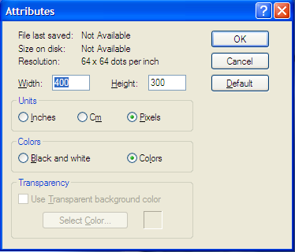
✓
Focus is on Width.
There it is: a whole Transparency group, with Use Transparent background color, a Select Color… button and a colour swatch. It isn't hidden in the Windows sense; every control in it is visible. It has simply been placed where the window doesn't reach. Reading the live window from the inside gives the exact status verified live:
OUTSIDE id=65535 groupbox @11,198 231x78 visible "Transparency"
OUTSIDE id=1068 checkbox @20,218 189x16 visible,disabled,tabstop "Use &Transparent background color"
OUTSIDE id=1069 pushbutton @50,241 110x23 visible,disabled,tabstop "Select &Color..."
(the dialog's client area is only 198 pixels tall)
With an ordinary picture open, Tab walks Width → Height → Pixels → Colors → OK → Cancel → Default and starts over. It never lands on Transparency, because Windows skips disabled controls even when they're marked as tab stops, and Alt+T is dead for the same reason. Now press Open a .gif above and try again.
It wakes up for GIFs
With a GIF open, the group comes alive verified live, XP SP3. Use Transparent background color is enabled, and it is tab stop number five, right after Colors, even though it's still sitting off the bottom of the window. Select Color… stays grey until the box is ticked. With any other format the whole group is disabled. So an XP user who opened a GIF and pressed Tab five times was standing on a checkbox they couldn't see, and a space bar would tick it.
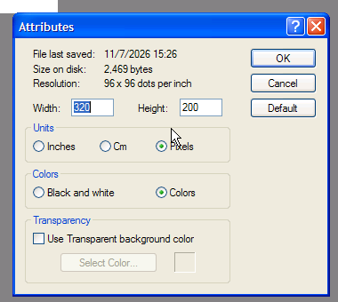
XP SP3 today, a GIF open, the dialog pulled taller. The checkbox is live; only Select Color… waits for it. I haven't re-tested whether ticking it changes the GIF that Paint writes.
Why is it there? The feature had a home in Windows 2000, and XP shrank the dialog over it instead of deleting the controls. That's cheaper and safer, because code elsewhere may still look those controls up by ID, and it evidently still does: something in XP Paint enables the checkbox when the file is a GIF. Windows 7's ribbon Paint rebuilt the dialog (now "Image Properties"), and the group is gone.
Ticking it, finally
Nineteen years after the stretched dialog, the obvious question is whether the box does anything. So I did the whole act on XP SP3 verified live: open a four-colour GIF, Image ▸ Attributes, pull the dialog taller, Tab four times, Space, Tab, Enter for Select Color…, pick yellow, OK, OK, Ctrl+S.
XP SP3, keyboard only. The Select Color box opens already expanded, offering a muddy blue-grey (R 33, G 67, B 101) before anything is picked. Hold that thought.
Then I copied the saved file back out of the VM and read its bytes. A GIF marks a transparent colour in a Graphic Control Extension, eight bytes beginning 21 F9, whose flag bit says "index n is see-through". Here is the file I gave Paint, which already had one, and the file Paint wrote back:
So, no: ticking it changes nothing in the file verified live. The code says why static. When you press OK, Paint copies the checkbox into a global variable (at 0x0103E86C) and the colour into another (0x0103D6A4). I searched the whole of mspaint.exe for that first address. It is read in exactly one place, the dialog's own setup code, which ticks the box again next time you open Attributes. It is written in three: the OK button, and File ▸ New and File ▸ Open, which reset it to zero. The GIF writer never looks at it. The box is a note Paint writes to itself and reads back to you.
Two more details fall out of the same code. The box is enabled only when the open file's format ID equals {B96B3CB0-0728-11D3-9D7B-0000F81EF32E}, which is GDI+'s ImageFormatGIF. That's the tell: XP's Paint hands files to GDI+, the graphics library new in XP, while Windows 2000's Paint used the old image filters that could write a transparent GIF. The dialog survived the move to GDI+, and the plumbing behind it didn't. And the "unset" colour is a sentinel, 0x87654321, written by New and Open as C7 05 A4 D6 03 01 21 43 65 87. A Windows colour value keeps red, green and blue in its low three bytes, and here those are 21 43 65: R 33, G 67, B 101. That's the blue-grey the Color dialog offered in the clip. It's a programmer's countdown, not a colour.
The third colour was the transparent colour all along
Paint's colour box has a second way to fill 0x0103D6A4. Its click handlers test the Ctrl bit of the mouse flags and, if it's set, send the colour there instead of to the foreground or background well static. Wikipedia and Betawiki record this as the Windows 98 "third colour": Ctrl+click a swatch, then hold Ctrl while drawing. On XP verified live, Ctrl+click shows up as the backdrop behind the two colour wells, the dotted grey you may never have noticed was a third well:
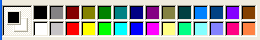
As shipped: the dithered backdrop means "no third colour".
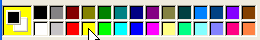
After Ctrl+click on yellow.
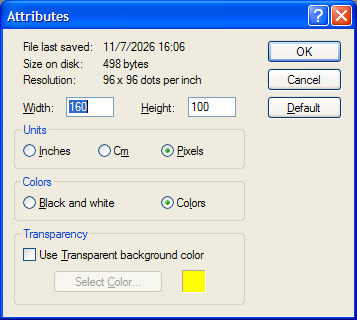
Then open Attributes. The box is still unticked, but the Transparency swatch is already yellow. With a BMP open the whole group is grey, yet the swatch still shows whatever you Ctrl+clicked; a Ctrl+drag with the pencil draws in that same colour (red, in this test).
So in XP Paint, the "third colour" and the GIF's "transparent background colour" are one variable. Six of Paint's drawing routines check it against the 0x87654321 sentinel and use it in place of the foreground or background colour when it's set static. I couldn't make it change a transparent selection drag tested live, so what else, if anything, it feeds remains open.
Prior art
The Ctrl+click third colour is noted on Betawiki and in Wikipedia-derived pages as a Windows 98 addition. I found nothing connecting it to the Attributes dialog's transparency colour, the indicator's dithered backdrop, the 0x87654321 sentinel, or the fact that XP's checkbox is never read. Seen it before? Tell me.
The paper trail
I remembered the find as the work of an AutoHotkey script, so I searched my old email to check. The earliest written record is a message I sent on August 16, 2007, a little over 19 years ago, to the makers of NiftyWindows, a free utility that could resize any window. It says I found the option by force-resizing Paint with NiftyWindows, and that once I knew it was there I could reach it by tabbing. In 2010, explaining it to a friend, I said I had been using AutoHotkey to resize windows. The two accounts fit: NiftyWindows was itself an AutoHotkey script, and by the summer of 2007 I was mailing myself scripts of my own.
From the 2007 attachment: the stretched Attributes dialog. The checkbox label is black, not grey; only Select Color… is greyed.
For a while one detail didn't line up. Both emails say the Tab key could get there, but my first probe for this article found the controls disabled and skipped by Tab. The 2007 screenshot pointed at the reason: in it, Use Transparent background color is enabled, only Select Color… is greyed, and the open file is untitled.GIF. My first test had a non-GIF image open. I've since re-tested on XP SP3 with a GIF open, and that's exactly it verified live: the checkbox is enabled and is the fifth tab stop while still off-screen, just as the 2007 email says. Both of us were right, about different files.
These are recreations of the messages, not screenshots. The text is copied from the real emails; I've left out other people's surnames and every email address. Click a collapsed message to open it.
MailBETArecreation« Back to Inbox
ArchiveReport spamDeleteMore actions ▾
Nifty. Hidden Buttons in Programs
★William SharkeyThu, Aug 16, 2007 at 10:47 AMto NiftyWindowsHi Enovatic, You might have realized that by force-resizing windows that are not meant to be resized…
Hi Enovatic,
You might have realized that by force-resizing windows that are not meant to be resized, you can sometimes find hidden buttons in programs.
Here is one that I found in mspaint:
Gif transparency options for XP users. (and perhaps Vista). This feature was a standard part of 95 and a 98 upgrade, but was removed from xp. I've attached a picture of the find. Interestingly, you can use the option without nifty windows, by tabbing, but I never would have found it without nifty.
Computer nerds love to uncover little secrets like this. Perhaps with your guidance, I can search for more secrets and put up a webpage, to be consumed by the types of digg.com . It could raise the awareness of what you do, if that is something you desire.
The earliest record of the find, sent to the publisher of NiftyWindows. Nobody wrote back, and the webpage it proposes is, belatedly, this one. The attachment is shown as a capture of Gmail's preview of it, not the original file; click it to enlarge. It shows Paint, in the Windows Classic theme, with a file called untitled.GIF and a hand-drawn "Nifty". The Attributes dialog is stretched to show the Transparency group, with "File last saved: 8/16/2007 10:37 AM", ten minutes before the email, and a red arrow pointing at it. A second, unstretched Attributes dialog sits in the corner for comparison, and the taskbar shows Lotus, Gmail and Firefox's Downloads window.
MailBETArecreation« Back to Inbox
Jay commented on your photo…
☆FacebookMon, Feb 22, 2010, 4:26–4:28 PMto meJay: the blobs are really nice. did you do this with brush size? · dude, this stuff is AWESOME! · love it.. more!
Jaythe blobs are really nice. did you do this with brush size?
Jaydude, this stuff is AWESOME!
Jaylove it.. more!
☆FacebookMon, Feb 22, 2010 at 6:09 PMto meJay: how to paint with transparencies? eh? that's a nice one with brush size…
Jayhow to paint with transparencies? eh? that's a nice one with brush size, didn't know it was possible. / your approach is interesting. I do about the same thing, but with a different set of parameters. I'm going to have to have a long talk with you about this some day soon.
☆William SharkeyMon, Feb 22, 2010 at 6:13 PMto FacebookI over hyped my transparency discovery…
I over hyped my transparency discovery... Basically one day I was using autohotkey to resize windows. You can over-ride windows with set sizes, like the color pallet in mspaint is a set size, but with windows gui hacking you can make it larger. Well, I found out that there is a hidden option for choosing a transparency color when working with gifs. It must have been a bit buggy, or hard to use, so they moved it off to the side of the gui, and hid it for all eternity. But you can still get there through clever use of the tab key. TMI, I know.
ReplyForward
Two and a half years later, replying by email to a friend's comments on a Paint picture. Facebook sent three notifications between 4:26 and 4:28 PM; they're shown together here because the record doesn't say which comment came at which minute.
MailBETArecreation« Back to Inbox
Buzz from William Sharkey
☆meThu, Feb 25, 2010 at 9:11 PMto mejay: so what's the story behind creation of these? what software, etc..? …
William Sharkey– FlickrFeb 11, 2010
halloween
jay – so what's the story behind creation of these? what software, etc..? … Feb 11
William Sharkey – Dots are made by me, no computer algo. I just choose a round brush size, a color, and draw some dots. Feb 11
William Sharkey – Self uses thicker, more transparent lines, as to resemble colored scotch tape. Trees only selects lines which are close to vertical. Feb 11
jay – … the lines in that remind me of the lines you have here. Mine was automated, too. … Feb 12
William Sharkey – NO F***ING WAY I ALSO USE AUTOHOTKEY TO MAKE AUTOMATED PICS!! =) I thought I was the only one Feb 12
William Sharkey – Autohotkey+mspaint is the shit, We think the same. Feb 12
ReplyForward
A Google Buzz comment thread from the same month, delivered as an email digest (the digest's thumbnail no longer loads, so it's a grey box here; only some of the comments are shown): AutoHotkey driving Paint, this time to make pictures.
MailBETArecreation« Back to Inbox
Thanks
☆William SharkeyTue, Mar 18, 2008 at 12:02 PMto ChrisHi Chris, I'm leaving my job this week to go back to school…
Hi Chris,
I'm leaving my job this week to go back to school.
While working here I have scripted many a thing with Autohotkey.
Before I leave, I am having a meeting with my bosses. Topic: how to use the scripts I have created, and also, they're interested in learning Autohotkey for themselves, so I will be showing them some examples.
You've made my work-place more fun by giving me a scripting language I can actually use!
I know this wouldn't have been possible without your hard work!!!!
Thanks,
William
ReplyForward
☆ChrisTue, Mar 18, 2008 at 4:32 PMto me(reply from Chris — summarized, not quoted)
(reply from Chris — summarized, not quoted) He thanked me for the kind words, was glad I'd found AutoHotkey easy to use, and wished me luck going back to school.
Chris is AutoHotkey's author. A thank-you sent through the AutoHotkey forum when I left the job where I'd been scripting everything.
The family tree
Paint's lineage is written into its files. Windows 3.x Paintbrush was licensed from ZSoft's PC Paintbrush, and the 16-bit executable still says so in its module description, a string Windows keeps in the file but never shows static:
styled as DEBUG.EXE The bytes are real: PBRUSH.EXE from WfW 3.11, file offset 0xEC0 (DEBUG loads a file at offset 100h; the segment number is illustrative). 0E is the string's length: fourteen characters, "PC Paintbrush+".
Its own Font dialog has a pile in the corner. Paintbrush customised the standard Font dialog but had no use for "Color:", so the label and its drop-down sit at exactly (300, 300) in a dialog 264 units wide static.
Two of its file dialogs have 0×0 buttons. The custom Open and Save templates (resources 19 and 20) carry Help and Read only, both zero pixels wide, both still tab stops, stacked on the same point (208, 46) static.
The Omit Picture Format option is an INI switch. Paintbrush reads OmitPictureFormat from its settings, the same thing as the Options ▸ Omit Picture Format menu item static.
Windows 7 Paint has a menu bar it never shows.mspaint.exe.mui still contains MENU 2: a single Help popup with one empty item. The ribbon replaced the menu bar; asked live, the window reports no menu at all verified live.
…and a "Zoom" label parked at (32709, 32717). The ribbon window holds a hidden static control, Zoo&m, 0 pixels wide and 364 tall, almost exactly at the 16-bit coordinate limit of 32,767 verified live. WordPad has the same one (see Write & WordPad).
Paintbrush 3.11 · Font dialog, resource 21
drawn from the resource Windows 7 Paint's leftover menu, MENU 2, drawn from mspaint.exe.mui.
A dialog with no door: Grid Settings
XP Paint has a dialog that nothing in Paint can open. mspaint.exe resource DIALOG 4001 is called Grid Settings: a Pixel Grid checkbox and a Tile Grid with a width and height in pixels. The number 4001 appears once in the whole file, in the resource directory that lists it. No menu item, no accelerator, no line of code asks for it static. XP's only grid is View ▸ Zoom ▸ Show Grid (Ctrl+G), which has no settings.
To see it I had XP itself draw the template, loading it straight from mspaint.exe with a do-nothing dialog procedure rendered live:
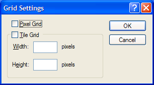
DIALOG 4001 from XP SP3's mspaint.exe, drawn by XP. Not a mock-up; just never opened by Paint.
I know this dialog from somewhere else. Visual C++'s resource editor has an image editor for icons and bitmaps, and its Grid Settings dialog has the same two parts. Microsoft's docs say the tile grid is for "bitmaps that contain multiple images arranged at regular intervals", like toolbar strips. Paint and that editor are both MFC programs from the mid-1990s. My guess is that they shared drawing code and this template came along with it. The pixel grid made it into Paint's View menu; the tile grid never did.
Prior art
The Visual Studio dialog is documented. I found no mention of a Grid Settings dialog, or a tile grid, inside Windows Paint. Seen it before? Tell me.
Paint: forty years in one dialog
History, 1985 to today · new screenshots from WfW 3.11, XP SP3 and Windows 7 SP1, taken for this piece · PBRUSH.EXE 3.10, mspaint.exe 5.1.2600.5512 and 6.1.7600.16385
The Transparency group that started this article is a fossil, and fossils make sense only in their layer. Paint's layers run deep. Windows has had a paint program since 1985, Microsoft has rebuilt it several times, and one small dialog, the one that tells you how big your picture is, has been in every version. If you line them up, you can watch the feature arrive, get stranded and disappear.
1984
ZSoft's PC Paintbrush
A DOS paint program from ZSoft of Marietta, Georgia, whose file format, PCX, became a standard. ZSoft's Mark Zachmann later called the deal with Microsoft a "typical OEM deal". Of the Windows paint program he said: "Unlike everything else, we sold it to them… They just bought it, included it in Windows, and we never saw it again." (Digital Trends, 2023).
No screenshot. I only capture systems we can run on our own rigs.
1985
Windows 1.0: Paint, saving .MSP
Black and white only, with its own file format, MSP. Wikipedia credits Microsoft's Dan McCabe, but gives no source unconfirmed.
Can't run it here.
1990–1992
Windows 3.x: Paintbrush, licensed from ZSoft
The colour version came with ZSoft's name inside it. The file's hidden module description is PC Paintbrush+ (see the family tree above), and its version resource gives the internal name PBrushXstatic. It still knew its predecessor: the string table contains "Pasting from MSP files is not supported. Open the MSP file, use the Save As command to save it as a bitmap file…" and "Paintbrush cannot load this file because it was created using a version of Windows earlier than 3.0." So 3.x Paintbrush opened Windows 1.0 Paint files as a conversion path static. The size dialog is Options ▸ Image Attributes: Width, Height, units of in/cm/pels, and Black and White or Colors.
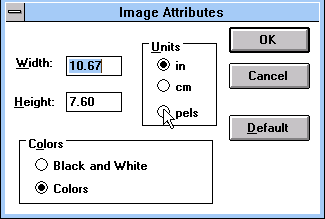
verified live WfW 3.11. The ancestor of every Attributes dialog below.
1995
Windows 95: Paint again, written from scratch
The name went back to Paint, the file to MSPAINT.EXE, and the default format to BMP. Wikipedia, citing Microsoft KB 130295, says the code was rewritten from scratch. The control IDs in today's Attributes dialog (Width 264, Height 266, Inches/Cm/Pixels 1028–1030, Default 280) are not Paintbrush's (100, 101, 102–104, 122), so the dialog we know comes from this rewrite or later static.
Can't run 95, 98 or 2000 here.
1998–2000
Windows 98 and 2000: GIF and JPEG, through borrowed filters
Paint could suddenly open and save GIF and JPEG files, but not by itself. KB 298580: "Microsoft Paint does not include any native filters for JPEG or GIF files… the filters are not installed in Microsoft Paint until Paint actually opens a JPEG or GIF file." (KB 298580). The filters were the Office-style graphics import and export DLLs, and with them came the Transparency group: for a GIF you could pick a transparent colour. This is the "standard part of 95 and a 98 upgrade" my 2007 email remembered. Windows 98 also added the Ctrl+click "third colour", which turns out to be the same variable (see the transparency exhibit).
2001
Windows XP: GDI+ moves in, the filters move out, the dialog shrinks
XP Paint hands images to GDI+, the graphics library new in XP. The dialog was cut off exactly at the top of the Transparency group: the template says the dialog is 122 units tall, and the group starts at y = 122 static. The old plumbing is still inside. mspaint.exe 5.1 contains, and calls from four places, a routine that walks HKLM\SOFTWARE\Microsoft\Shared Tools\Graphics Filters\Import (or \Export), reading each filter's Name, Path and Extensions, plus a list named Image API Enabled Filtersstatic. Windows 7's Paint has none of these strings. XP still went looking for the filters that made the 98 feature possible.
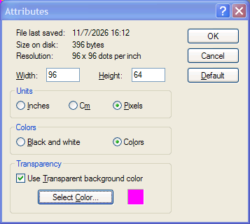
verified live XP SP3, my own 96×64 test GIF, dialog pulled taller, box ticked, magenta picked. I repeated the save test on a separate clone: the GIF Paint wrote has no 21 F9 transparency block, the same answer as the exhibit above.
2009
Windows 7: the ribbon, and "Image Properties"
"Paint and Wordpad are two of the first consumers of the Windows Ribbon UI Platform", and they were meant as examples of putting a ribbon on an MFC program (Engineering Windows 7 blog, January 2009). mspaint.exe 6.1 still imports MFC42u.dll. The dialog was redrawn as Image Properties, and the Transparency controls 1068–1070 are gone. Everything else kept its old ID. The sentinel didn't die either. Windows 7 Paint still stores "no transparent colour" as 0x87654321, in four instructions, and it still carries GDI+'s GIF format GUID. Its string table now warns: "Any transparency will be lost if you save this picture." static
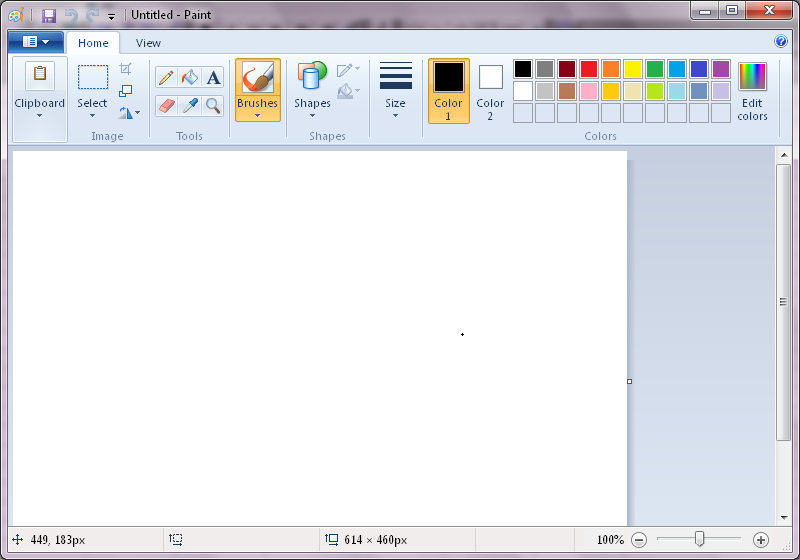
verified live Windows 7 SP1. The ribbon is one window; the old dialogs live on behind it.
2017
The deprecation scare
Paint appeared on the Fall Creators Update's deprecated list. Days later Microsoft wrote "MS Paint is here to stay", "after 32 years" (Windows blog, 24 July 2017).
2023
Windows 11: transparency, at last, for real
"With this update, we are introducing support for layers and transparency!" (Windows Insider blog, 18 September 2023). That's 25 years after Windows 98 first offered a transparent GIF colour and 22 after XP hid the checkbox.
One dialog, four Windows
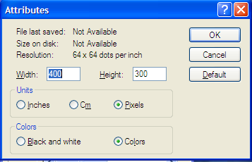
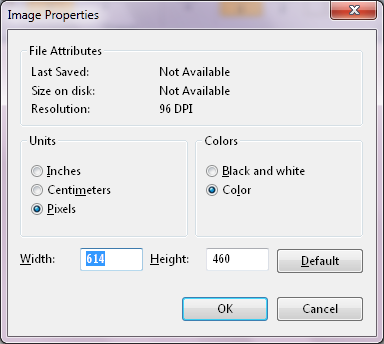
control
3.11
XP
7
Width box
100
264
264
Height box
101
266
266
in / cm / pixels
102–104
1028–1030
1028–1030
B&W / Colors
134, 135
1079, 1080
1079, 1080
Default
122
280
280
File info lines
—
1071–1073
1071–1073
Transparency
—
1068–1070
gone
Every frame is a real capture. IDs for 3.11 and XP are from the dialog templates; the Windows 7 IDs were read from the live window staticverified live.
The same magic number, eight years apart
"No transparent colour chosen" is stored as 0x87654321. Its low three bytes, 21 43 65, are the colour R 33, G 67, B 101 , which is why XP's Select Color box opens on a muddy blue. Here is the instruction that sets it in both Paints:
; mov dword ptr [global], 87654321hXP mspaint.exe 5.1 01D475: C7 05 A4 D6 03 0121 43 65 877 mspaint.exe 6.1 02BCF0: C7 05 CC A1 08 0121 43 65 87; opcode address of the the sentinel,
; transparent colour little-endian
static Real bytes. Only the address of the variable changed between the two programs. The 2009 ribbon rebuild carried an XP-era placeholder along with it, untouched.
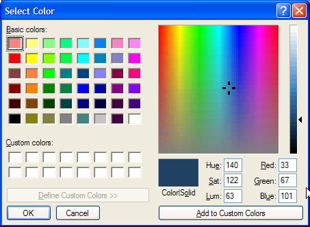
verified live XP SP3, the first click on Select Color… for a freshly opened GIF: Red 33, Green 67, Blue 101.
Prior artThe ZSoft licence, the 98 filters and the 2023 transparency update are all documented (sources below). I found nothing about XP Paint still walking the Office graphics-filter registry, about the Attributes dialog being cut off exactly at y = 122, or about Windows 7 Paint keeping the 0x87654321 sentinel. If you knew, tell me.
Brad Jones, "The history of Microsoft Paint", Digital Trends, 25 April 2023: digitaltrends.com
Microsoft KB 298580 (Windows 98/ME Paint and the JPEG/GIF filters): archived KB; KB 193354 (a missing JPEG filter): archived KB
KB Q132760, Windows 95 Paint's Stretch/Skew and its "transparent color": techshelps mirror
Riyaz Pishori, "Showcasing Windows 7 Platform with Applets", Engineering Windows 7, 28 January 2009: learn.microsoft.com
Megan Saunders, "MS Paint is here to stay", 24 July 2017: blogs.windows.com
Dave Grochocki, layers and transparency in Paint, 18 September 2023: blogs.windows.com
Wikipedia, "Microsoft Paint" (Windows 1.0 and 95 details; used where nothing better was found): en.wikipedia.org
Is this rare? Making the search methodical
Dragging edges finds things one window at a time. To search properly, I worked with Claude Code to build two small C programs (both are on GitHub, public domain):
dlgscan reads dialog templates straight out of .exe, .dll, .cpl and .mui files. That includes 32-bit and 64-bit PE files and the 16-bit NE files of Windows 3.x. It runs on Linux, macOS or Windows; you don't need the old Windows running to scan its files. For every dialog it compares each control's rectangle with the dialog's own size.
winprobe asks a running Windows where every control actually ended up. Programs often move controls after a dialog is created, so templates can lie. It also walks the real Tab order, can force-resize any window (the AutoHotkey trick, done properly), and has a crawl mode. Crawl launches a program, opens every menu item that ends in "…" (the classic promise that a dialog will appear), flips through every property-sheet tab, presses every >> expander, and probes and photographs each window.
Then I pointed them at three generations of Windows: Windows for Workgroups 3.11 running in DOSBox-X, Windows XP SP3 in a throwaway QEMU virtual machine, and a real Windows 7 SP1 box. The XP disk is booted in snapshot mode, so nothing the crawler did was saved.
13,952dialog templates scanned, all languages (10,852 unique)
143,535controls checked against their dialog's edges
325live windows opened and probed by the crawler
Windows
Files
Unique dialogs
Dialogs with an off-canvas or zero-size control
Rate
Windows for Workgroups 3.11
75
456
53
11.6%
Windows XP SP3
439
4,602
113
2.5%
Windows 7 SP1
584
5,794
97
1.7%
So yes, it's rare, and getting rarer. Most of those flagged dialogs turn out to be deliberate engineering patterns rather than forgotten features. Genuinely orphaned features like Paint's Transparency group number about a handful across all three systems. The fall from 11.6% to 1.7% fits a broader trend: as Windows went on, more UI moved out of classic dialogs altogether. Windows 7 Paint's entire ribbon shows up to winprobe as a single window called UIRibbonWorkPane, so there is nothing left inside it to misplace.
The scanners flag several kinds of hidden control; these are the main ones:
OUTSIDE sits entirely past the window's edge or at negative coordinates. This is Paint's Transparency group.
GHOST sits inside the window but is switched invisible: present, laid out, never shown.
ZEROSIZE is 0 pixels wide or tall but still has text or a tab stop.
DISABLED and COVERED controls are greyed out for good, or buried under a sibling control.
Each stop below mixes the two kinds of find: controls hiding in a window, and things hiding in a file. On to the next program, which is not really a program at all.
The Color dialog
COMMDLG.DLL (3.11) · comdlg32.dll (XP, 7) · used by Paint's Edit Colors, WordPad, Chat and anything else that asks for a colour
The common dialogs are shared furniture: every program that asks for a colour gets the same box from the same DLL. Which means a secret in it is in every one of them.
Every standard Windows colour picker (Paint's Edit Colors, among many) has a swatch labelled Color|Solid. That underlined o belongs to a pushbutton whose entire caption is &o. In the template it is 4 dialog units wide and parked at (300, 200), outside the dialog. It's in Windows 3.11's 16-bit COMMDLG.DLL, in XP, and in every language of Windows 7. In Bulgarian it's л, in Japanese O(O).
What does it do? On 16- and 256-colour displays most colours couldn't be shown directly, so Windows faked them by dithering: a fine checkerboard of colours it could show. The swatch shows both versions side by side: on the left the colour you asked for, dithered; on the right the nearest colour the screen can draw solid. Pressing the hidden button picks the solid one. Its control ID says so: 713 is COLOR_SOLID, and the two halves of the swatch are 730 COLOR_SOLID_LEFT and 731 COLOR_SOLID_RIGHT. On a true-colour screen both halves look the same and the button seems to do nothing, which is probably why almost nobody knows it's there.
Color|Solid
Simulated with the 20 colours Windows always reserves on a 256-colour screen, and a simple 4×4 dither. XP's dither pattern is different, but the solid colour it picks matches: 200,120,60 → 128,128,0, exactly as in the recording below.
To see it for real, I switched XP to 256 colours, typed 200, 120, 60 into Paint's Edit Colors, grew the dialog until the sliver appeared, stretched the button to normal size, and clicked it:
Windows XP at 256 colours. The 6-pixel button appears in the bottom-right corner once the dialog grows; widened, it's a plain button labelled "o". One click and the colour snaps from the dithered 200,120,60 to solid 128,128,0.
Prior art
The earliest trace is in Wine, the open-source reimplementation of Windows. In April 1996 Albrecht Kleine rewrote its ChooseColor dialog and reproduced the button with a knowing comment: PUSHBUTTON "&i",713,300,200,4,14 /* just a dummy: 'i' is like &i in "sol&id" */. It's still in Wine and ReactOS today. I couldn't find anyone writing about the button in Windows itself. Did you know? Tell me.
Here is that button in the 1992 file, as a hex editor would have shown it. A 16-bit dialog template is just a list of controls, and each control is a little record: position, size, ID, style bits, a class byte and the caption static.
styled as a 1990s hex editor Real bytes from WfW 3.11's SYSTEM\COMMDLG.DLL, file offset 0x159E1. The coloured run is the whole control: 19 bytes. Dim bytes belong to the neighbouring controls; the one after it is the "Color|S&olid" label.
Translators moved it, but never brought it home. In the Czech comdlg32.dll of Windows 7, the button is at (90, 200) and 214 units wide, captioned l, so in Czech the stub runs along under the bottom edge instead of off the corner. In Arabic its caption is خ, and the mirrored (right-to-left) template has its own copy static.
Control Panel had a private copy. WfW 3.11's MAIN.CPL carries a "Custom Color Selector" for the Colors applet, with the same trick pushed further: its o button is parked at (1000, 1000) static.
It's the same button in Windows Chat. The XP crawler met it in Chat's Background Color dialog too, 6 pixels wide, at (450, 325) verified live.
When an app customises a standard dialog, Windows' common-dialog code still expects every control it knows about to be present, by ID. So a program that doesn't want a control can't delete it. It has to shove it somewhere, and the Font dialog is where you see every strategy at once:
Clock (3.11) crams a dozen unwanted controls into a little pile off the right edge. See Clock.
Paintbrush (3.11) puts "Color:" and its drop-down at exactly (300, 300).
Notepad (XP, 7), On-Screen Keyboard and Chat take the polite route: Effects, Strikeout, Underline, Color and Apply are laid out in the window but hidden and disabled verified live.
And the stock XP Font dialog has a secret of its own: an Axes: group with six sliders, six edit boxes and their labels, all parked below the bottom edge static. It looks like the remains of support for Adobe's Multiple Master fonts, whose weight and width could be dialled continuously along "axes". Drag the edge down:
XP · Font dialog, resource 401
The x-ray above draws any dialog from its template alone. It travels: the small x-ray ↓ buttons further down the page bring it to whichever dialog that section is about.
No earlier mention found I found nothing about the Font dialog's hidden "Axes:" sliders. If you knew, tell me.
Cardfile was Windows' rolodex: a stack of index cards, each with a title line, which it could dial for you through a modem (Card ▸ Autodial, F5). Its Find dialog has a checkbox that has never been seen. The template contains Match Whole Word Only, enabled and a tab stop, placed 37 units below a dialog that's 62 units tall static. At runtime Cardfile also tells the common dialog to hide it, so it's belt and braces. Step through the real dialog's tab order; these are eight consecutive captures from WfW 3.11 verified live:
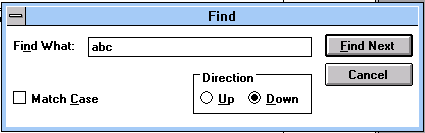
Tab order: Find What → Match Case → Direction → Find Next → Cancel → (around again). Match Whole Word Only is never visited.
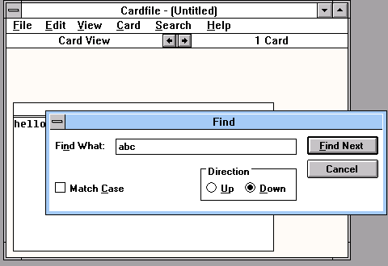
Cardfile in WfW 3.11, Find open. "Match Whole Word Only" begins its 17-year sleep a few pixels under that bottom edge.
Two undocumented INI switches. The code reads ValidateFileWrite and UsePrefix from its settings static. What they change wasn't traced.
It was an early OLE container. Cardfile 3.1 inserts an Object item into its Edit menu at runtime (InsertMenu, id 137), so a card could hold a Paintbrush picture or a Sound Recorder clip static.
Cardfile, Notepad and the desk they came from
History, 1985 to today · new screenshots from WfW 3.11, XP and 7, taken for this piece · CARDFILE.EXE, NOTEPAD.EXE, MYCARDS.CRD
If you never used Cardfile, here's the thing it was copying. Before contacts apps, an office kept facts on index cards: small stiff cards, 3 by 5 inches, with the important word written across the top line so you could riffle through a box and find it. The fanciest box was the Rolodex, a desktop wheel of cards you spun to a name. A Danish engineer, Hildaur Neilsen, patented it, and it went on sale in the late 1950s (Wikipedia). Thirty years later most desks still had one.
So when Windows 1.0 arrived in November 1985, promising a desktop on the screen, it shipped a little pile of desk accessories: a clock, a calculator, a calendar, a notepad, and a card file. GUIdebook's gallery of Windows 1.01 captions one screenshot simply "Address book in Windows 1.01 (Cardfile)" (GUIdebook). The idea wasn't new. A year earlier Borland's Sidekick had sold hundreds of thousands of copies to DOS users with a pop-up Notepad, Calculator, Appointment Calendar and Auto Dialer (Wikipedia). Windows made the same kit into windows of their own.
Cardfile's model is exactly the paper one. Every card has an index line (the top line, which Cardfile keeps in alphabetical order) and a body of 11 lines of 40 characters. A file holds up to 1,260 cards (Microsoft KB Q91683). You flip through them like a stack, or switch to a list of the top lines, and if a card has a phone number on it, Cardfile will dial it through your modem. Here's one I filled in on Windows for Workgroups 3.11 for this article, with five period-plausible cards:
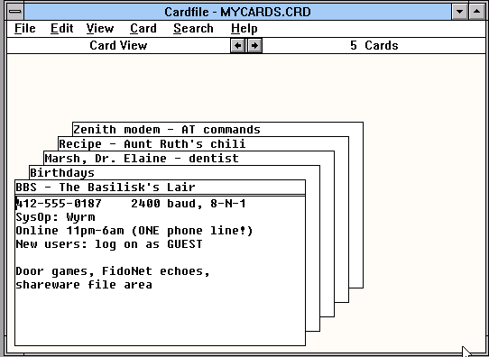
verified liveMYCARDS.CRD in Cardfile, WfW 3.11. The cards are mine; the phone numbers are 555 numbers. The index lines peek out above the front card like the tabs of a paper file.
Cardfile and Notepad were born together and lived side by side for a decade, then their paths split: one was quietly dropped, the other is still being updated in 2026. Step through it:
CardfileNotepadbothcontext
Before Windows: the pop-up desk
DOS · Borland Sidekick, 1984
PCs in 1984 ran one program at a time. Sidekick was a memory-resident program you could summon over whatever else was running, with a notepad, calculator, appointment calendar, ASCII table and an auto-dialer. It sold more than a million copies in its first three years (Wikipedia). That list of tools is almost exactly the list Windows shipped a year later.
No screenshot here. I can only capture systems I can run legally on our rigs, so the stops before 1992 are text and sourced facts.
Windows 1.0: both are born
Windows 1.01 · November 1985
Windows 1.0 shipped on 20 November 1985 with Notepad, Calendar, Clock, Calculator, Write, Terminal and "the Cardfile manager" (Wikipedia; real screenshots of each in GUIdebook's 1.01 gallery). They were demonstrations as much as tools: proof that one screen could hold an address book, a text file and a clock at once.
Can't run it here. GUIdebook's gallery has the real Windows 1.01 Cardfile and Notepad.
Windows 2.x: Notepad learns to keep a diary
Windows 2.03, 2.1, 2.11 · 1987–1989
Type .LOG as the very first line of a text file, and every time Notepad opens it, Notepad adds the current time and date to the end and puts the cursor there, ready for a new entry. Microsoft's KB article on the trick lists Windows 2.03 through 3.0a, and notes that in 3.0 only the date appears (KB Q81067). It still works today. I tried it on every system below.
I couldn't find a full list of what 2.x changed in Cardfile unconfirmed.
Windows 3.0: the version people actually used
Windows 3.0 · May 1990
Windows 3.0 is where most people met these programs. Cardfile's Card ▸ Autodial (F5) "allows you to dial a number listed in a card" (KB Q88573); there's even a KB article for its "No Modem Connected" error (KB Q80174). Files began with the letters MGC. Wikipedia says those were the developer's initials, with no source unconfirmed.
Notepad was small then. It "cannot open a file that exceeds 54 kilobytes" and stops you editing somewhere between 45K and 54K (KB Q59578). It lived in the Windows directory, which is why, Raymond Chen explains, there are still two copies of Notepad today: NT later put another in System32 (The Old New Thing).
Can't run it here. The 3.11 screenshots on the next stop show the same programs one revision later.
Windows 3.1: cards that hold pictures
Windows 3.1 · April 1992 · screenshots from Windows for Workgroups 3.11
3.1 brought OLE, Object Linking and Embedding: "Microsoft has added OLE capabilities to new versions of the Windows Write, Paint, and Cardfile accessories" (KB Q83245). Switch a card into Picture mode and Insert Object opens Paintbrush or Sound Recorder inside your card. When you close Paintbrush, it asks whether to update the card. The accessories also moved to the new shared Open, Save and Find dialogs (KB Q83812). Flip through what Cardfile 3.1 looks like:
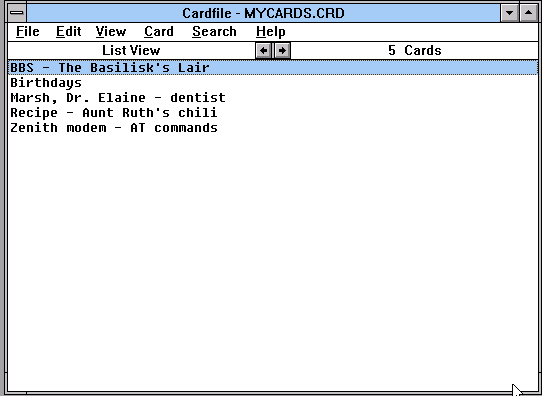
View ▸ List: just the index lines, alphabetical.
Windows for Workgroups 3.11 and NT 3.1
WfW 3.11 · November 1993 · NT 3.1 · July 1993
The first sibling goes. Our WfW 3.11 install has Cardfile, Notepad, Write, Terminal and Recorder, but no CALENDAR.EXE; Schedule+ (SCHDPLUS.EXE) sits in its place verified live. Wikipedia says Calendar was replaced by Schedule+ in Windows for Workgroups and NT 3.1, without a source (Wikipedia) unconfirmed. Cardfile, meanwhile, made the jump to NT: there's a KB article on a Cardfile bug in NT 3.1 and 3.5 (KB Q129481).
Notepad 3.11 is still a small 16-bit program (32,736 bytes). The .LOG trick now stamps the time too:
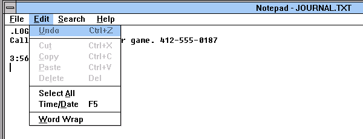
Opening a .LOG file appended 3:56PM 11/7/26. The emulator's clock says 2026, and Notepad writes the year with two digits. The Edit menu has Time/Date on F5, the same stamp on demand. verified live
One oddity: Notepad 3.11 doesn't contain the text .LOG anywhere in its file static. Like the /.SETUP switch in the Notepad chapter, it must check the letters one at a time.
NT 3.51: a Unicode Cardfile
Windows NT 3.51 · 1995
Microsoft's own description of the file format has a section on "Card File Changes in NT 3.51": "The only difference in the unicode format is the signiture (DKO) and the characters, now 16-bits wide" (KB Q99340, misspelling theirs). So there are three Cardfile species: MGC, RRG (with OLE objects) and DKO (Unicode).
Can't run it here.
Windows 95: the accessories are replaced
Windows 95 · August 1995
Windows 95 replaced most of the old accessories:
Write became a stub: "Write.exe starts, which in turn starts WordPad" (KB Q132790).
Paintbrush became Paint, with a Pbrush.exe kept for old OLE objects (KB Q148494).
Cardfile, Calendar and Clock were simply not installed. A note on the Windows 95 CD warns that a finance program "uses the Calendar.exe, Cardfile.exe, and Clock.exe files that shipped with Windows 3.x", which you only had if you'd upgraded over 3.x (KB Q135899).
Notepad survived, with WordPad as its big sibling for large files. The often-quoted 64 KB limit in 95 isn't in any Microsoft source I could find unconfirmed.
Can't run it here.
NT 4.0: gone from the default install
Windows NT 4.0 · 1996
Microsoft's list of the files in SYSTEM32 after a fresh NT 4.0 Workstation install includes Notepad.exe 4.00 but no cardfile.exe (KB Q196699). The NT 4.0 readme also mentions "the Windows 3.1 Macro Recorder which is not included in Windows NT version 4.0" (KB Q142644), so Recorder was gone too.
Can't run it here.
Windows 98 and Me: in the box, not on the disk
Windows 98 · 1998 · Windows Me · 2000
Cardfile came back as a secret. Microsoft's KB 245157, "How to enable the Cardfile program in Windows 98 and Windows Millennium Edition", says it "is not enabled by default" but "the program file is included on the Windows 98 and Windows Me CD-ROM", and has you pull cardfile.exe out of the cabinet files with the System File Checker (KB 245157, archived). That's the last Microsoft-sanctioned way to run it that I found.
Can't run it here.
Windows XP: Notepad alone
Windows XP · 2001 · Notepad 5.1 · screenshots from our XP machine
There's no Cardfile on XP. I searched system32 and its dllcache: the only "card" there is cards.dll, the deck of playing cards Solitaire draws verified live. write.exe is still there, still just a stub for WordPad. Notepad 5.1 keeps the .LOG habit (now with a four-digit year) and the 1992 Find dialog, in new paint:
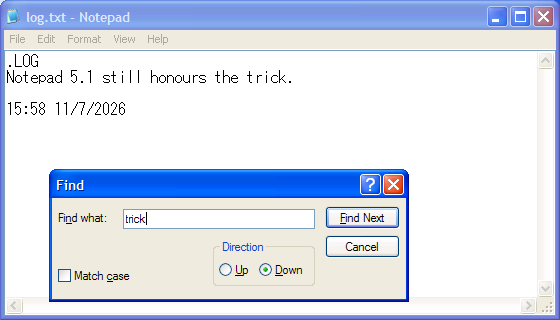
Notepad 5.1 on XP. The .LOG stamp reads 15:58 11/7/2026; the Find box has the same controls as 1992's. verified live
XP-era Notepad is also where the most famous Notepad story lives: short files like "Bush hid the facts" reopening as Chinese characters, because Notepad has to guess whether a file without a marker is Unicode. Raymond Chen explains the guessing and why "somebody will win and somebody else will lose" (2004, 2007).
Windows 7: the same dialog under glass
Windows 7 · 2009 · Notepad 6.1
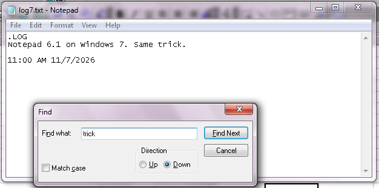
Notepad 6.1. The same .LOG trick, the same Find box; the ghost checkbox is still inside, at ID 1040 (the Notepad chapter switches it on). verified live
Raymond Chen has pointed out that most of what makes Notepad work is Windows' standard multi-line edit control, which Notepad wraps in a menu and a few dialogs (The Old New Thing).
Windows 10: Unix line endings, after 33 years
Windows 10 · 2018
Until 2018, a text file from Linux or an old Mac opened in Notepad as one long line, because Notepad only understood the DOS-style CR LF line break you can see in the hex view below. On 8 May 2018 Microsoft announced "extended line endings support in Notepad": Unix (LF) and old-Mac (CR) files now display properly and keep their style when saved (Microsoft Command Line blog). The same month Raymond Chen wrote "Maintaining Notepad is not a full-time job" (The Old New Thing).
No Windows 10 machine on our rigs.
Windows 11: tabs, spellcheck, formatting
Windows 11 · 2023–2025
Notepad became an app updated through the Microsoft Store (it was first listed there in 2019, then pulled and relisted, BetaNewssecondary source), and started changing quickly:
Bold, italics, headings and links, saved as Markdown, May 2025 (Windows Insider blog).
In other words, Notepad turned into the Write it outlived. I didn't check whether today's Notepad still contains the hidden checkbox.
No Windows 11 machine on our rigs.
Cardfile's afterlife
.CRD files, still being opened
People kept their cards. Thirty years of addresses and recipes outlive the program, so there are independent readers: AZZ Cardfile for Windows (Softpedia), Cardwin for Linux (SourceForge), and a Python extractor (crdextractor). Notepad, which can't read the index, can still read every card body, as the 1993 stop shows.
Inside a .CRD file
Here is the actual file I saved from that session, MYCARDS.CRD, all 918 bytes of it (download it). It starts with the three letters MGC, then a two-byte card count, then one fixed 52-byte index entry per card, then the cards themselves. Each index entry is just the card's title line plus a pointer to where that card's body lives further down the file. That's why Cardfile could flip to any card instantly and sort them alphabetically without touching the bodies: the whole index is read first, and it's tiny. Pick a card to see its entry and its body light up:
MYCARDS.CRD Hex · 918 bytes · saved by Cardfile 3.1
000000:4D474305000000000000000901000000MGC.............000010:424253202D2054686520426173696C69BBS - The Basili000020:736B2773204C61697200000000000000sk's Lair.......000030:000000000000000000000000000000AD................000040:0100000042697274686461797300756E....Birthdays.un000050:7420527574682773206368696C690000t Ruth's chili..000060:00000000000000000000000000000000................000070:0000001D020000004D617273682C2044........Marsh, D000080:722E20456C61696E65202D2064656E74r. Elaine - dent000090:69737400000000000000000000000000ist.............0000A0:00000000000000970200000052656369............Reci0000B0:7065202D2041756E7420527574682773pe - Aunt Ruth's0000C0:206368696C6900000000000000000000 chili..........0000D0:00000000000000000000002103000000...........!....0000E0:5A656E697468206D6F64656D202D2041Zenith modem - A0000F0:5420636F6D6D616E6473000000000000T commands......000100:0000000000000000000000A000343132.............412000110:2D3535352D3031383720202020323430-555-0187 240000120:3020626175642C20382D4E2D310D0A530 baud, 8-N-1..S000130:79734F703A205779726D0D0A4F6E6C69ysOp: Wyrm..Onli000140:6E65203131706D2D36616D20284F4E45ne 11pm-6am (ONE000150:2070686F6E65206C696E6521290D0A4E phone line!)..N000160:65772075736572733A206C6F67206F6Eew users: log on000170:2061732047554553540D0A0D0A446F6F as GUEST....Doo000180:722067616D65732C204669646F4E6574r games, FidoNet000190:206563686F65732C0D0A736861726577 echoes,..sharew0001A0:6172652066696C65206172656100006Care file area..l0001B0:004D6F6D202E2E2E2E2E2E2E2E2E2E2E.Mom ...........0001C0:2E204A616E2031340D0A4B6576696E20. Jan 14..Kevin 0001D0:2E2E2E2E2E2E2E2E2E2E2E2041707220........... Apr 0001E0:320D0A4772616E647061204A6F65202E2..Grandpa Joe .0001F0:2E2E2E2E204175672033300D0A54696E.... Aug 30..Tin000200:61202E2E2E2E2E2E2E2E2E2E2E2E204Ea ............ N000210:6F762031392028636172642129000076ov 19 (card!)..v000220:0044722E20456C61696E65204D617273.Dr. Elaine Mars000230:682C20442E442E532E0D0A3232313020h, D.D.S...2210 000240:466F72626573204176652E2C20537569Forbes Ave., Sui000250:746520340D0A50697474736275726768te 4..Pittsburgh000260:2C2050412031353231330D0A28343132, PA 15213..(412000270:29203535352D303134320D0A0D0A4E65) 555-0142....Ne000280:787420636C65616E696E673A204D6172xt cleaning: Mar000290:636820313939330000860032206C6220ch 1993....2 lb 0002A0:67726F756E6420636875636B2C203120ground chuck, 1 0002B0:6F6E696F6E0D0A322063616E73206B69onion..2 cans ki0002C0:646E6579206265616E730D0A31206361dney beans..1 ca0002D0:6E20746F6D61746F2073617563650D0An tomato sauce..0002E0:322054206368696C6920706F776465722 T chili powder0002F0:2C203120742063756D696E0D0A0D0A53, 1 t cumin....S000300:696D6D65722032206872732E20426574immer 2 hrs. Bet000310:74657220746865206E65787420646179ter the next day000320:2E000071004154445420206469616C20...q.ATDT dial 000330:28746F6E65290D0A4154483020206861(tone)..ATH0 ha000340:6E672075700D0A41545A202020726573ng up..ATZ res000350:65740D0A2B2B2B202020657363617065et..+++ escape000360:20746F20636F6D6D616E64206D6F6465 to command mode000370:0D0A0D0A4361726466696C652063616E....Cardfile can000380:206469616C3A2043617264203E204175 dial: Card > Au000390:746F6469616Ctodial
signature "MGC"card count = 5offset of card bodyindex (title) linestale bytestext lengthcard text
Pick a card above.
verified livestyled as a 1990s hex editor Every byte is real. Microsoft documented the index layout in KB Q99340 (for RRG; MGC uses the same 52-byte entries after a shorter header). The MGC card layout follows the description collected by Cardwin and Just Solve the File Format Problem. Every offset checks out against the bytes.
Note the residue. Cardfile writes each title's whole 40-byte slot, so whatever was in memory past the title's terminating zero ends up on disk. Here it's harmless (another card's title), but it's the same family of mistake as documents that leak deleted text verified live.
Cardfile 3.1 writes a plain MGC file as long as no card holds an object, which matches what the Cardwin notes say. Add a single embedded object and the file changes species. I gave a new card a Paintbrush picture (one black ellipse, drawn by holding Ins and pressing arrow keys, because the emulator's mouse wasn't cooperating) and saved it. The signature became RRG, a four-byte "last object ID" appeared before the card count, and the card body now starts with an OLE 1.0 object: version 0x0501, format 2 (embedded), class name PBrush, then the picture as a complete Windows bitmap:
OBJCARD.CRD Hex · 2,248,826 bytes
000000:5252470100000001000000000000003DRRG............=000010:000000004C6F676F202D20666F722074....Logo - for t000020:6865206E6577736C6574746572000000he newsletter...000030:00000000000000000000000000010000................000040:00000001050000020000000700000050...............P000050:42727573680000000000000000000050Brush..........P000060:2200424D363822000000000036000000".BM68".....6...
"RRG"last object ID = 1card count = 1offset 0x3Dindex lineobject flag, OLE 1.0 header, "PBrush"native size 0x225000, then "BM…"
verified live The first 112 bytes of the second file. My reading of the object header follows the OLE 1.0 stream layout; the 2.2 MB is almost all bitmap: Paintbrush embedded its whole 1024×730, 24-bit canvas, not just the ellipse. One doodle made the file bigger than a 1.44 MB floppy.
One Find dialog, four Windows
This is where the two programs meet. Windows 3.1 added a library of common dialogs (COMMDLG.DLL): one Open box, one Save box, one Font box, one Find box, shared by every program so they'd all look alike. Both Cardfile and Notepad import its FindText function (the 3.11 binaries both name commdlg_FindReplace) static. The stock Find box has a "Match Whole Word Only" checkbox, control ID 1040. A program that can't honour it is meant to pass a flag, FR_HIDEWHOLEWORD, and the dialog hides it (Microsoft's FINDREPLACE reference).
Notepad asks for it to be hidden. Cardfile goes further and ships its own copy of the template with the checkbox pushed off the bottom, as the Cardfile chapter shows. And Notepad 3.11 still carries something older: a complete private Find dialog of its own, resource 9, with "Match Upper/Lowercase" and Forward/Backward buttons. That's the shape of a Find box from before common dialogs existed. I didn't trace whether any code path can still open it, so treat it as a fossil static:
reconstruction Drawn from the real bytes of dialog resource 9 in WfW 3.11's NOTEPAD.EXE (file offset 0x79B0): caption "Find", 199×65 dialog units, font Helv 8, eight controls. Positions are converted at 1.5 × 1.625 pixels per unit; the colours and font are approximations of the 3.1 look.
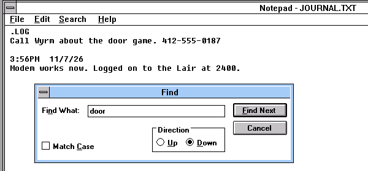
Notepad, WfW 3.11 (1993). The common dialog with the whole-word box hidden.
Why hide it rather than implement it? Nobody at Microsoft has said, as far as I can find. The likeliest reason is the obvious one: Notepad's search is a plain substring scan over the edit control's text, and "whole word" needs a definition of a word, which the small program never grew inference. What's certain is the result: from 1992 to today, the checkbox has ridden along, hidden, in every Notepad I could run here (3.11, XP and 7).
The Cardfile checkbox has a descendant. Seventeen years later, Windows 7 Notepad's Find dialog still contains "Match whole word only", at the same control ID, 1040, as a hidden, disabled ghost. Notepad never offered whole-word search. So I resurrected it with winprobe show, ticked it, and searched a file containing "concatenate the cat" for catverified live:
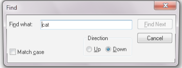
As shipped.
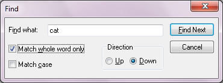
The ghost, resurrected and ticked.
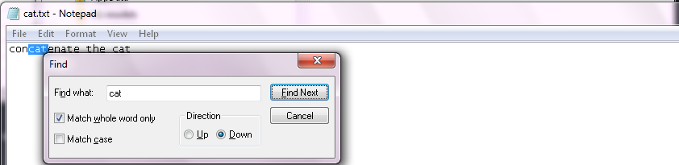
A dead switch. With "whole word" ticked, Notepad still selects concatenate (selection 3–6), the same as with it unticked.
Try the same experiment here. This little Notepad matches the real one, so the resurrected checkbox does nothing:
concatenate the cat
The dashed box marks the resurrected ghost.
Prior art
The earliest note I found that Notepad's Find dialog hides this checkbox is on the AutoHotkey forums, of all places: jeeswg's "Notepad tutorial" (around 2017) observes that "Notepad does not offer 'whole word' searching, so therefore this control is unnecessary, and is thus hidden." I found nothing about Cardfile's off-canvas copy, or anyone switching Notepad's on to see whether it works. Tell me if you did.
The installer's private Notepad
Notepad has a second personality, built for Windows Setup. It has a second accelerator table, SlipUpAcc, which turns Esc and Ctrl+D into Exit, and it's only loaded when Notepad is started as notepad /.SETUP file. Presumably Setup used it to show you a README you could dismiss with one key. It's in both the 1992 and the 2009 Notepad, but written differently. Windows 7 compares the argument with the string L"/.SETUP". Windows 3.11 has no such string anywhere in the file; it checks the argument one character at a time, which makes the switch invisible to anyone searching the file for text static:
File Edit View Search Make Run Options Browse Help
NPINIT.C
/* Is the command line "/.SETUP filename"? (seg2:00DB) */BOOL NEAR CheckSetupArg(LPSTR lp)
{
if (lp[0] != '/' || lp[1] != '.' || lp[2] != 'S' || lp[3] != 'E' ||
lp[4] != 'T' || lp[5] != 'U' || lp[6] != 'P')
return FALSE;
fRunBySetup = TRUE;
hSysMenuSetup = GetSystemMenu(hwndNP, FALSE);
hAccel = LoadAccelerators(hInstanceNP, "SlipUpAcc"); /* Esc, ^D = Exit */
lp += 7;
while (*lp == ' ' || *lp == '\t')
lp++;
if (*lp)
lstrcpy(szFileName, lp); /* then opens it */
...
}
Line 1 Col 1 NPINIT.C
reconstruction What this routine in 3.11's NOTEPAD.EXE might have looked like. The logic is from the disassembly: seven byte compares (cmp byte ptr es:[bx], 2Fh …), GetSystemMenu, LoadAccelerators with the data-segment string "SlipUpAcc", then skipping spaces and tabs and copying the file name. Names, comments and the file name are invented.
On Windows 7 I ran it both ways and read the window's style bits verified live:
normal
/.SETUP
window style
0x14CF0000
0x04FD0000
visible
yes
no (WS_VISIBLE off)
minimize box
yes
no
scroll-bar bits
not set
set
So Setup gets an invisible, non-minimisable Notepad to show when it chooses. I didn't send it Esc, so the exit keys themselves remain static.
A registry switch for a broken edit control. Windows 7 Notepad reads a DWORD named fMLE_is_broken from HKCU\Software\Microsoft\Notepad. If it's nonzero, Word Wrap destroys and rebuilds the edit control instead of reformatting it in place with EM_FMTLINESstatic. MLE is Microsoft's name for the multi-line edit control; the switch reads like a workaround left in for a bug in it.
Hidden Help buttons. Notepad's Find and Replace dialogs on Windows 7 also carry a hidden, disabled Help button, and the Font dialog hides Effects, Apply and Help verified live.
XP's Notepad 5.1 carries the same three strings, /.SETUP, SlipUpAcc and fMLE_is_broken, so the private mode runs unbroken from 1992 through 2001 to 2009. On XP I pressed the keys too verified live. notepad /.SETUP t.txt starts a Notepad with no visible window; it shows up only to FindWindow. Once I made it visible and gave it focus, Esc closed it at once, and in a second run so did Ctrl+D. In an ordinary Notepad, Esc does nothing. The SlipUpAcc keys are real: an installer that pops up a README can let you dismiss it like a message box.
Calculator
CALC.EXE (3.11) · calc.exe 5.1 (XP) · 6.1 (7)
Calculator has nothing hidden in its windows; the XP crawler found 30-odd real buttons and nothing else. Its files are another matter. Every 16-bit Windows program carries a "module description", the first entry in its non-resident name table. Windows never shows it to anyone. In CALC.EXE it's a credit static:
styled as DEBUG.EXE Real bytes from WfW 3.11's CALC.EXE, file offset 0x7E0. The 35 before "Microsoft" is the string's length, 53. The version resource adds a second line: "Calculator — Developed for Microsoft".
Kraig Brockschmidt later became known for Inside OLE, Microsoft Press's doorstop on the object model of the 1990s. In 1992 his name sat in the calculator, one byte before the window procedure's name, CALCWNDPROC.
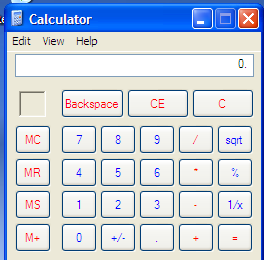
XP. Every button is a real button, and none is hiding.
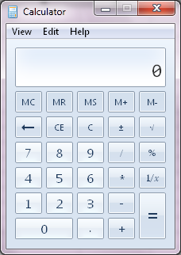
Windows 7's rewrite, with unit conversion and date calculation.
Typos in the registry. Windows 7 Calculator saves its state under Software\Microsoft\Calc with value names including Unit_Converion_history (next to a correctly spelled Unit_Conversion_data) and datettime_datestart. A resource constant is spelled IDS_TEMPALTE_XMLstatic. Typos in persisted names are forever: fixing one would orphan everyone's saved history.
Developer diagnostics left in. Strings like Duplicate Formula: , Undefined unit or arg: and Setting Data on Unit in Combobox failed ship in the retail binary static.
A menu item it can remove. The code deletes Date calculation (id 979) from the menu under some condition. On my Windows 7 box it was present verified live, so the condition is somewhere else.
Restart Manager aware. It accepts /restart, as do Paint, WordPad and Sticky Notes, so Windows Update could close and reopen it static.
Calculator: the arithmetic underneath
History, 1985 to today · new screenshots from WfW 3.11, XP SP3 and Windows 7 SP1, taken for this piece · CALC.EXE 3.10, calc.exe 5.1 and 6.1.7601.17514
Calculator looks like the least interesting program in Windows: a picture of a pocket calculator. But a pocket calculator works in decimal, and a PC works in binary floating point, which can't hold 0.01 exactly. Each generation of Windows Calculator is a different answer to that mismatch, and you can still see each answer on the screen.
1985
Windows 1.0: a desk accessory
Calculator shipped in Windows 1.0 with Clock, Notepad, Cardfile and the rest of the "desk" (Wikipedia).
Windows 3.x: Kraig Brockschmidt's scientific calculator
The 3.x Calculator has a scientific mode with hex, octal and binary, statistics and trig. It is credited twice: in the hidden module description ("Microsoft Calculator: Developed by Kraig Brockschmidt", shown above) and, which is easy to forget, on screen in its own About box. Microsoft's Channel 9 later interviewed him as the man "who wrote the scientific calculator for Windows 3!" (Microsoft Learn). Its window class is SciCalc, and the scientific layout is a dialog template named SCstatic. The class name lasted: XP's Calculator is still a SciCalc window.
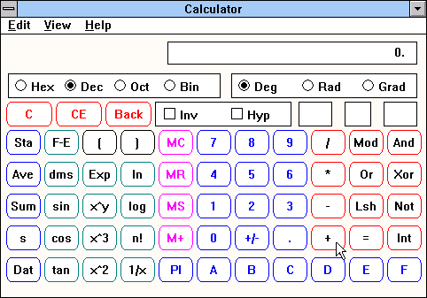
verified live WfW 3.11, View ▸ Scientific.
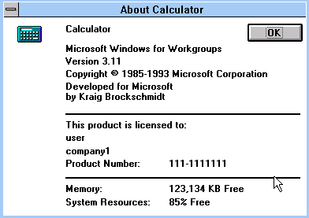
verified live "Developed for Microsoft by Kraig Brockschmidt", right there in Help ▸ About.
January 1995
The subtraction bug, and the fix
Microsoft shipped an updated Calculator for Windows 3.1 and 3.11 because "previous versions of Calculator display simple subtraction errors": 12.52 − 12.51 showed 0.00, and the new one "displays the correct result, which is .01" (KB Q124345, "WW1138: Updated Calculator"). The copy on our 3.11 rig is the original, and it still gets it wrong verified live. So do 2.01 − 2 and 10.21 − 10.2. The value underneath isn't zero, though: multiply that 0.00 by 100 and the display shows 1. The number was right to within a hair. What failed was turning it back into decimal digits for the display.
The same month, someone at Microsoft started a new maths library. The header of ratpak.h in today's open-source Calculator reads "Package Title ratpak … Copyright (C) 1995-99 Microsoft … Date 01-16-95 … Infinite precision math package" (GitHub). Raymond Chen describes what it replaced: "The standard IEEE floating point library was replaced with an arbitrary-precision arithmetic library" (The Old New Thing, 2004).
2001
Windows XP: 32 digits, and the square-root crumb
XP's Calculator gets 12.52 − 12.51 right. Arbitrary precision has a cost, though: √4 isn't stored as exactly 2, so √4 − 2 shows a crumb, −8.16…e−39 on XP verified live. Windows 7 shows a different crumb for the same keys, −1.068…e−19, the value Raymond Chen explains in his 2016 post on Calculator's "32 digits of precision" (The Old New Thing, 2016). The two values were compared on CodeProject in 2010 (thread). The crumb was finally swept away in 2018: "Square roots of perfect squares are now exact" (The Old New Thing, 2018).
2009
Windows 7: a new Calculator, run by an XML file
Rewritten with Programmer and Statistics modes, history, date calculation, and unit conversion and worksheets (mortgage, lease, fuel economy) (Engineering Windows 7). The window class is now CalcFrame. Every conversion and worksheet is data: a 73,540-character XML document stored in calc.exe.mui as resource IDS_TEMPALTE_XML [sic], in a schema at http://www.microsoft.com/applets/calc/templates/v1, with 192 conversion formulas written as text static. Try them below.
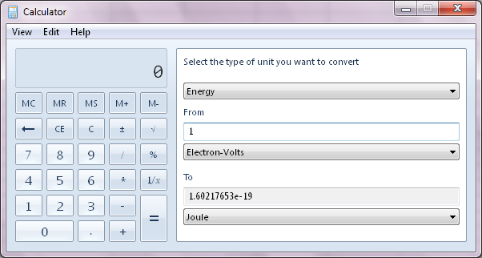
verified live One electron-volt is 1.60217653 × 10−19 joules, according to Windows 7.
2019
Open source
"We are open sourcing Windows Calculator on GitHub under the MIT License" (Windows blog, 6 March 2019). The 1995 ratpak is in it. The unit table moved into C# code, and its electron-volt is 1.602176565 × 10−19 (GitHub).
Same keys, three Calculators
Windows 7's unit converter, running on its own formulas
→
reconstruction The formulas are copied from IDS_TEMPALTE_XML in the Windows 7 calc.exe.mui, character for character, and chained through each category's hintBaseUnit, like the real one. The arithmetic here is JavaScript doubles, not ratpak, so the last digits can differ.
Inside the XML: the bugs that aren't
The template has the fingerprints of a hurried copy and paste static:
<!-- in the Temperature category: --><!-- function call: convert (Length, mm, cm, 80.4); ... --><- comment pasted from Length
<formula name="dfToK" toUnit="k" fromUnit="df">
<constantString formulaConst=" 273.15 + (5 / 9) * ("/>
<unit unitName="dc"/> <- Celsius, in the Fahrenheit formula<!-- in Velocity and Area: -->
<formula name="mesecTo" toUnit="cmsec" fromUnit="mesec">
<formula name="sqcmTo" toUnit="sqmm" fromUnit="sqcm">
<formula name="sqcmTosqcm" ...> formulaConst="1" <- "x 1", no operator<!-- in Energy: -->
formulaConst="* 160217653 e-27" <- CODATA 2002
<description> There are various units for length unit ...</description>
Do they break anything? I tested each one on the real Windows 7 Calculator verified live. 212 °F → 373.15 K, and 212 °F → 100 °C. 1 m/s → 100 cm/s, and back. 5 cm² → 500 mm², 0.0005 m², and the reverse conversions. 1 inch → 2.54 cm. All right. The engine finds formulas by their fromUnit and toUnit attributes, so the names are just labels, and it drops the input into whatever <unit> slot it finds, whatever that slot is called. The broken identity formula is never needed. The typos are harmless, much like the misspelt registry names (Unit_Converion_history) in the Calculator section.
The electron-volt is the one that dates it. 1.60217653 × 10−19 J is the CODATA 2002 recommended value. CODATA 2006, published in 2007, refined it to 1.602176487 × 10−19 (NIST, CODATA 2002 table). So Windows 7 shipped in 2009 with a constant that was already one revision old. Its successor on GitHub uses the 2010 value, 1.602176565.
Prior artThe 3.x subtraction bug, ratpak and the square-root crumb are well documented (above). I found no earlier write-up of Windows 7 Calculator's embedded XML template, of its CODATA 2002 electron-volt, or of a check that the misnamed formulas still work. If you knew, tell me.
CHARMAP.EXE (3.11): "Utility for easily selecting special characters." · charmap.exe (XP, 7)
Character Map's secret is a whole panel. On XP and 7, everything behind the Advanced view checkbox (Character set, Group by, Go to Unicode, Search for, and a Search button) is already in the window, hidden, laid out below the bottom edge. Ticking the box grows the window down over controls that have been waiting there all along verified live:
XP's Character Map, captured today. Its window class is called MyDlgClass, a name with real sample-code energy. Just under the bottom edge: Group by, Search for and a hidden, disabled Search button.
Windows 7 ships a Windows Server 2003-era binary. The version resource of Windows 7's charmap.exe says 5.2.3668.0, with the VS_FF_PRIVATEBUILD flag set, while Windows' own servicing manifest calls the same file 6.1.7601.18648 static. 5.2 is the Server 2003 line, and 3668 is lower than its release build, 3790. It looks like nobody touched the version resource after a pre-release build of .NET Server.
Eight shortcuts that can't work.charmap.exe.mui has an accelerator table named UCE mapping Ctrl+Home, End, arrows, PgUp and PgDn to commands 121–128. But charmap.exe never imports LoadAccelerators or TranslateAccelerator, so the table can't be loaded static. *.uce was the old "Unicode subrange" file type; the keys probably belonged to a feature that was cut.
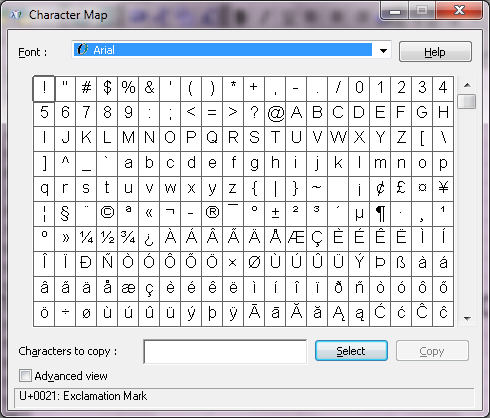
Windows 7's Character Map, the same window with a different coat of paint.
Character Map: the program that was called UCE
History, 1992 to today · new screenshots from WfW 3.11, XP SP3 and Windows 7 SP1 · CHARMAP.EXE 3.10, charmap.exe 5.1 and "5.2.3668", getuname.dll, eudcedit.exe
The 16-bit CHARMAP.EXE describes itself, in a string Windows never shows, as a "Utility for easily selecting special characters." static. One font, one grid, a Characters to Copy box. The status bar names the keystroke for whatever character is selected ("Keystroke: Spacebar" in the capture below). OSNews notes that it "started its life in Windows 3.11, with version number 3.10" (OSNews, 2015).
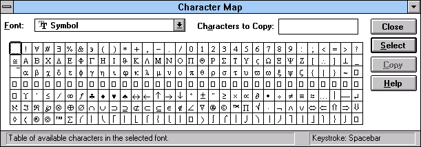
verified live WfW 3.11 with the Symbol font. Greek and maths symbols, typed through Alt codes.
1990s
Windows NT and 2000: Unicode, and "UCE"
The Unicode Character Map was a different program, and its insides still call it UCEstatic:
XP's charmap.exe builds its main window from a dialog resource named UCE, passing the string "UCE" to CreateDialogParamW.
It keeps its settings in a WIN.INI-style section called [MSUCE], through GetProfileStringW, GetProfileIntW and WriteProfileStringW. Windows 7 moved them to HKCU\Software\Microsoft\CharMap.
The DLL that supplies character names describes itself as "Unicode name Dll for UCE" (getuname.dll, version 5.1.2600.0).
Its file filter is *.uce, for "Unicode Subrange" and "Japanese Shift-JIS Subrange" groupings.
An accelerator table named UCE (Ctrl+Home, End, arrows, PgUp and PgDn) is in both XP's and 7's files. Neither program imports LoadAccelerators, so the keys were already dead in 2001.
What the letters stood for, I can't prove. "Unicode Character Explorer" or "…Editor" would fit, but that's a guess unconfirmed. I couldn't find the name in Microsoft documentation or anywhere else.
2001
XP: Advanced view and 10,685 names
Tick Advanced view and the window grows over a panel that was already there (see the Character Map section): Character set, Group by, Go to Unicode, Search for. Search works because getuname.dll carries a name for every code point it knows: 10,685 strings, in Title Case ("Latin Capital Letter A", "Euro Sign", "White Smiling Face"), ending at U+FFFE "Undefined". The private-use area gets placeholders: U+E000 is "Private Use" and U+F8FF is "<Private Use, Last>" static. Others have since found the undocumented GetUName function and call it from their own code (dev.to).
2001–2009
Private Character Editor: drawing your own
For East Asian users the problem wasn't finding a character but not having it, such as a rare surname or a company mark. Windows' answer was EUDC, end-user-defined characters: "custom characters… defined and implemented either by an end user or by another party, such as an equipment manufacturer, a user group, a government body, or a font design company" (Microsoft Learn). eudcedit.exe draws them into the Unicode private-use area starting at U+E000, and Character Map checks the \FONTS\EUDC registry entries so it can show them. The editor hardly changed between XP and 7. Windows 7's menu code even deletes the IME import items unless the editor's language is Chinese or Japanese static.
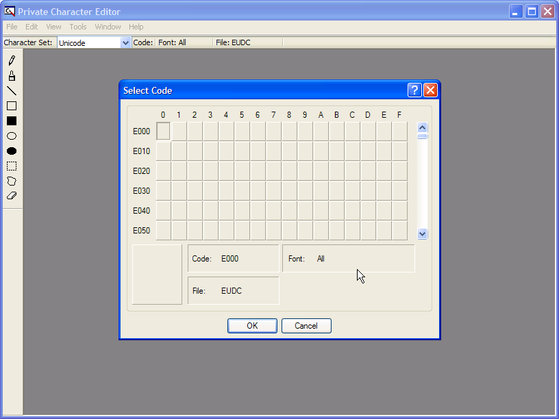
verified live XP SP3.
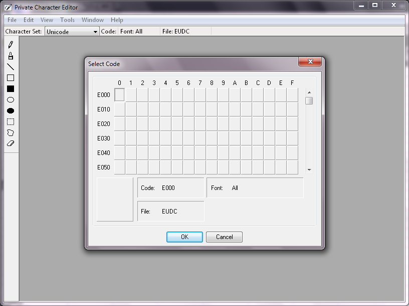
verified live Windows 7 SP1. The same program in a new frame.
2009
Windows 7: the Server 2003 binary
Windows 7's Character Map says it is version 5.2.3668.0, a pre-release Server 2003 number, flagged as a private build (see above). It looks the same as XP's because, judging by the version stamp, it hardly changed after 2003.
Tick "Advanced view"
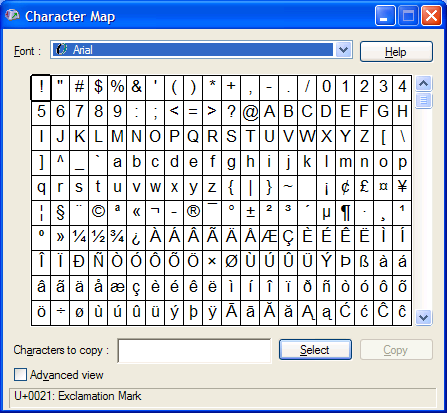
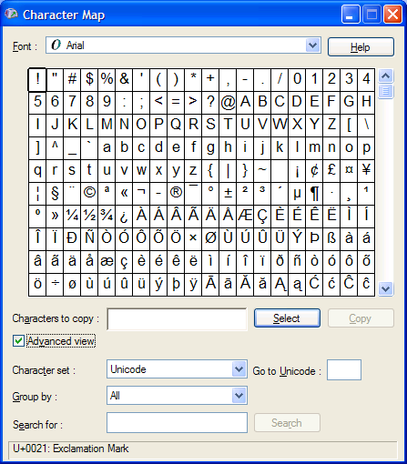
The window is 413 pixels tall. The Advanced panel is already laid out beneath it.
verified live Two real XP SP3 captures, before and after the tick. The box animates between their heights, 413 and 510 pixels.
static Real bytes and strings from XP SP3's files.
No earlier mention foundI searched for "Unicode name Dll for UCE", MSUCE and the UCE dialog and found getuname.dll discussed only as a source of character names, never what UCE means or that Character Map uses the name internally. Did you work on it? Tell me.
Thom Holwerda, "The peculiar history of the Windows Character Map", OSNews, 17 June 2015: osnews.com
Sound Recorder is a small window with a big menu: Effects could speed up, slow down, reverse and add echo to a recording. I opened it on XP today and read it from the inside verified live:
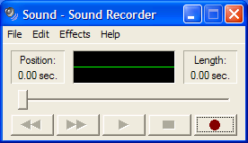
XP Sound Recorder. The labels are a private window class called noflickertext, the green oscilloscope is wavedisplay, and the sunken boxes are shadowframe. The five transport buttons are owner-drawn.
The 16-bit original draws those buttons from five little bitmaps static:
REWINDFORWARDPLAYSTOPRECORD
3.11 deletes two of its own menu items. The Edit menu resource includes Paste Insert and Paste Mix, and the code calls DeleteMenu on both around seg2:0399 static, presumably when there's nothing it can paste. XP's version keeps them: today's menu dump lists both verified live.
Windows 7's Sound Recorder is a COM server. It calls CoRegisterClassObject, so other programs can drive it, and it creates a named event called Time Limitstatic.
XP's Volume Control hides a far-away label. Each mixer strip template in sndvol32.exe has a %s Balance: label 0 units tall at x = 4625, about 66 strip-widths to the right static. Its Advanced Controls dialog has two hidden checkboxes captioned just "1" and "2" below the edge, placeholders for whatever switches a sound card offers.
Windows 7's Volume Mixer keeps a message ready. A hidden static inside the window reads "No audio device is installed", for the day the speakers disappear verified live.
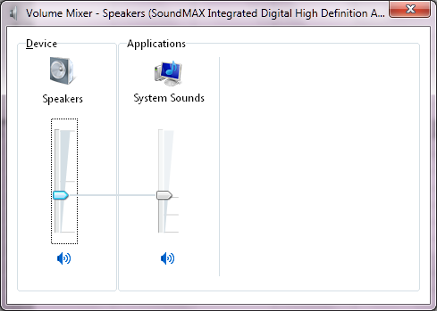
Windows 7 Volume Mixer. The "No audio device is installed" ghost sits behind these sliders.
Sound Recorder: the sixty-second wall
History, 1991 to today · new screenshots and a clip from WfW 3.11, XP SP3 and Windows 7 SP1 · SOUNDREC.EXE 3.1, sndrec32.exe 5.1.2600.5512, SoundRecorder.exe 6.1.7600.16385
Anyone who used Sound Recorder remembers the wall. You press the red button, talk, and at exactly 60 seconds it stops. For twenty years the official advice was a trick. Microsoft's own advice for raising the limit doesn't touch a setting at all: you record a silent file and paste it into itself, over and over. The wall turns out to have a door, and the door has a history that goes back to 1991.
1991–1992
Multimedia Extensions, then Windows 3.1
Sound Recorder arrived with Windows 3.0 with Multimedia Extensions and was bundled with 3.1. COMPUTE! explained it in April 1992: "Sound Recorder lets you do simple editing and mixing of Waveform files… It can handle recordings 60 seconds long." (COMPUTE! #139). The Effects menu could speed up, slow down, reverse and echo, all done in memory.
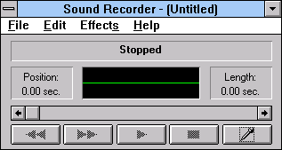
verified live WfW 3.11. The record button is a microphone; XP's is a red dot.
The 60 is in the code as a plain number. When you press record, 3.1's SOUNDREC.EXE converts 60,000 milliseconds to bytes for the current format and adds that to the length of what you already have static. That's the size of the buffer it records into. At 3.1's typical 11 kHz, 8-bit mono, a minute is 661,500 bytes, a big slice of a 4 MB PC.
1990s
The official workaround: record silence
Microsoft's knowledge base, for NT and later for 95 and 98: Sound Recorder "has a default maximum recording time of 60 seconds". Record 60 seconds of nothing, save it as Blank.wav, then Edit ▸ Insert File it into itself, and "the maximum recording time is increased by 60 seconds" each time (KB Q128457, KB 82215). The code above explains why this works. The limit is never "60 seconds". It is "what you have, plus 60 seconds".
2001
XP: the 60 becomes a registry setting nobody mentioned
In XP's sndrec32.exe, the constant has become a default. At startup it reads a DWORD called BufferDeltaSeconds from HKCU\Software\Microsoft\Windows\CurrentVersion\Applets\Sound Recorder, defaulting to 60. It clamps the value to between 5 and 350 and multiplies by 1,000 static. "Delta" is the right word: it's the amount added to the current length. Two siblings sit next to it: NumAsyncWaveHeaders (default 10) and MSecsPerAsyncBuffer (default 250, clamped between 62 and 10,000).
I set it and watched verified live, XP SP3. With no value, Length reads 60.00 sec. the moment recording starts. With BufferDeltaSeconds = 1000, it reads 350.00 sec., the clamp. With 3, it reads 5.00 sec., the floor.
verified live XP SP3, shown at 2×. First the default: Length jumps to 60.00. Then I add BufferDeltaSeconds = 350 and start again: 350.00.
2010
The hex-editor fix
A blogger worked out that the limit "works by allocating enough memory for that long a recording" and published a patch: copy sndrec32.exe, and at file offset 0x628E change the 4-byte value to, say, 300 (flarn2006, February 2010). In the SP3 file I checked, 0x628E is exactly the 3C 00 00 00 below: the default for BufferDeltaSeconds. The patch works, and it lands on the one byte that a registry value would have overridden anyway. Anything above 350 still gets clamped.
2007–2009
Vista and 7: a new recorder with one button
Rebuilt from scratch. The internal name is AudioRecorder, the window class AudioRecorderMainFrameTraits, and it records to disk through DirectShow instead of into memory. Its error text says "Windows Sound Recorder is not installed properly. Run REGSVR32 WavDest.Dll." WavDest is the name of a DirectShow SDK sample filter static. Full Windows saves WMA (WAV only in the N editions, per Wikipedia). The documented command line is /FILE and /DURATION. The binary also parses /TIMESTAMP, /LOG and /HELP, and contains the path c:\AudioRecorderLog.txt and a Group Policy key Software\Policies\Microsoft\SoundRecorderstatic. It still has a message for "The maximum recording time has been reached.", but because it writes to disk there is no 60-second buffer to fill. I didn't test how long it will go. One commenter on the Engineering Windows 7 blog called the new recorder "a HUGE downgrade".
verified live Windows 7 SP1. The whole program. Two of its four toolbars are 0×0 and never seen.
2022
Windows 11: "Sound Recorder" again
"The update to the new Sound Recorder will replace the Voice Recorder app." (Windows Insider blog, May 2022). The old name came back after the Windows 10 years as Voice Recorder.
Move the wall
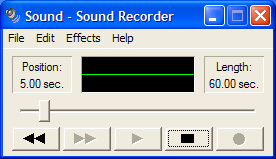
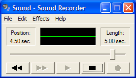
Position: 0.00 sec.Length: 60.00 sec.
a drawing, not a capture
; Windows 3.1 SOUNDREC.EXE file offset 001C92 (16-bit)
FF 36 EC 01 push word [1ECh] ; the wave format
6A 00 68 60 EA push 0:EA60h; 60,000 ms
0E E8 57 F9 call ms_to_bytes
03 06 1E 00 add ax,[1Eh] ; + current length; Windows XP sndrec32.exe file offset 00627E
68 48 16 00 01 push "BufferDeltaSeconds"
C7 45 08 3C 00 00 00 mov [ebp+8], 60; default (0x628E: the byte the 2010 patch edits)
E8 A5 4C 00 00 call RegQuery…(HKCU\…\Applets\Sound Recorder)
B9 5E 01 00 00 mov ecx, 350; ceiling
… 83 F8 05 cmp eax, 5; floor
69 C0 E8 03 00 00 imul eax, eax, 1000 ; seconds -> ms
static Real bytes, lightly trimmed. The comments and the name ms_to_bytes are mine. verified live The three screenshots above.
Prior artThe 60-second limit, the Blank.wav trick and the 2010 hex patch are all documented. I searched for BufferDeltaSeconds and found nothing: no KB, no tweak site, no forum post. Nor did I find anyone connecting the patch offset to a registry default, or quoting 3.1's hard-coded 60,000. If you set this value in 2003, tell me.
"How to get started with multimedia", COMPUTE! #139, April 1992: atarimagazines.com
Minesweeper paints its whole window itself, so there's nowhere to hide a control. It hides keys instead. The famous one is XYZZY: type it, press Shift, and (as the folklore goes) a single pixel in the corner of the screen turns black or white depending on whether the mouse is over a mine. The word is right there in the 3.11 data segment static:
styled as DEBUG.EXE Real bytes from WfW 3.11's WINMINE.EXE at file offsets 0x3590 and 0x6620. The second dump is the About box's string table, with its length bytes: 0B "Minesweeper", then 21 (33) "by Robert Donner and Curt Johnson".
The keyboard handler that uses it is short, and it holds three more keys that no help file mentions static:
File Edit View Search Run Debug Utility Options Help
WINMINE.C
case WM_KEYDOWN:
switch (wParam) {
case VK_F4: /* sound on/off: needs Sound=2 or 3 */if (Preferences.fSound > 1) {
if (Preferences.fSound == 3) { EndTunes(); Preferences.fSound = 2; }
else Preferences.fSound = FInitTunes();
}
break;
case VK_F5: /* hide the menu bar: needs Menu=1/2 */if (Preferences.fMenu) SetMenuBar(1);
break;
case VK_F6: /* show it again */if (Preferences.fMenu) SetMenuBar(2);
break;
case VK_ESCAPE: /* the boss key */
fStatus |= fIcon;
PostMessage(hwndMain, WM_SYSCOMMAND, SC_MINIMIZE, 0L);
break;
case VK_SHIFT:
if (iXYZZY >= 5) iXYZZY ^= 0x14; /* 5 <-> 17: pixel on/off */break;
default:
if (iXYZZY < 5)
iXYZZY = (szXYZZY[iXYZZY] == (char) wParam) ? iXYZZY + 1 : 0;
}
F1=Help Alt=Menu 00012:001
reconstruction What the WM_KEYDOWN handler at seg1:063A of the 3.11 WINMINE.EXE might have looked like. The logic is from the disassembly: the compares against 73h, 74h, 75h, 1Bh and 10h, xor byte ptr [34h], 14h, the per-letter match against the string at 36h, and PostMessage(…, 112h, F020h, …). Every name and comment is invented.
So: F4 toggles sound, but only if Sound= is 2 or more in winmine.ini (it plays through the 3.x speaker-music driver, SOUND.DRV). F5 and F6 hide and show the menu bar, but only if Menu=1 or 2. And Esc minimises the game instantly: a boss key. On XP those settings moved to HKCU\Software\Microsoft\winmine; I haven't checked the XP handler yet.
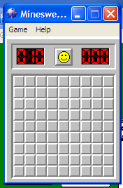
XP Minesweeper: one window, painted by hand, nowhere to hide a control.
Prior art XYZZY is famous, and "Robert Donner and Curt Johnson" are in the About box. I couldn't find the F4/F5/F6 keys or the Esc boss key described anywhere. Did you know them? Tell me.
F5 and F6 made it to XP
The 3.1 keys above were thought to have died with winmine.ini. XP's Minesweeper stores its settings in the registry instead, and it never writes a Menu value there. But it still reads one, and its keyboard handler still has the same branches static: Shift is the XYZZY toggle, F4 flips Sound between 2 and 3 if it's already above 1, and F5 and F6 hide and restore the menu bar, but only if Menu is non-zero. The Esc boss key is gone.
So I added Menu = 1 (a DWORD) under HKCU\Software\Microsoft\winmineverified live:
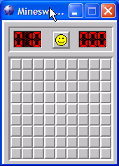
It starts with no menu bar. F5 keeps it that way.
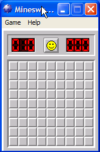
F6 brings Game and Help back.
A borderless, menuless board, for a 1990 developer taking screenshots or a 2001 office worker keeping a low profile. I removed the value afterwards.
Before Solitaire or Minesweeper, Windows had one game. Reversi (Othello under another name) shipped with Windows 1.0 in 1985 and stayed through Windows 3.0. It had a Game menu with Hint, Pass, New and Exit, and a Skill menu with Beginner, Novice, Expert and Master, where higher levels simply thought longer. When Windows 3.1 arrived in 1992, Minesweeper took its place in the Games group. That makes Reversi the first game Windows ever dropped.
1985 Windows 1.0: Reversi is the only game. Later accounts credit it to Chris Peters, then a Microsoft development manager, but I found only one source for that.
1987 Windows 2.x keeps it, now in overlapping windows.
1990 Windows 3.0 adds Solitaire alongside it.
1992 Windows 3.1 drops it for Minesweeper. An updated REVERSI.EXE with its own help file is still in Microsoft's Windows 3.1 Driver Library, a quiet way out.
today "Reversi" in the Microsoft Store means third-party apps. The Windows original never came back.
Reversi
Your move (black).
reconstruction A playable stand-in, not the original code. The menus, the four skill names and the cross-shaped Hint follow the 3.0-era help file. The computer's play is a simple corner-loving search whose depth rises with Skill. I have no Windows 1.x–3.0 install to capture, so there are no live screenshots here; MobyGames and GUIdebook have period pictures.
1989? Curt Johnson writes a mine game for OS/2. Robert Donner ports it to Windows. Both names are still in the 3.11 About box (shown above in the DEBUG dump).
1990 It ships on 8 October in the Microsoft Entertainment Pack, a box of small games sold alongside Windows 3.0.
1992 Windows 3.1 includes it in place of Reversi. Like Solitaire's drag and drop, it trains a mouse skill, here the right click. The WfW 3.11 file still calls itself "Minesweeper v3.0a".
1999 In Italy, Sergio Chiodo starts the "International Campaign to Ban Winmine", saying a game about landmines is offensive. Italian Windows 2000, ME and XP ship it as Prato fiorito, "flower field", with flowers instead of mines and a tune instead of an explosion.
2001 XP moves its settings from winmine.ini to the registry and loses the Esc boss key.
2006 Vista's rewrite (Oberon Games) gives everyone a flower-garden option. Windows 8 drops the game, and it moves to the Store.
The 1992 keys, on a running 3.11
The handler shown above checks Menu= in winmine.ini before F5 and F6 do anything. With [Minesweeper] Menu=1 added, the game starts with no menu bar at all verified live:
Default.
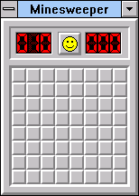
Menu=1, F5.
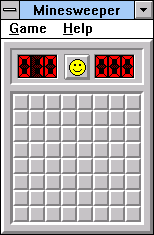
F6.
Esc made the window disappear at once, minimised. That's a boss key, and unlike Wes Cherry's in Solitaire, this one shipped. The Cutting Room Floor already lists Menu=1. I still found no description of Esc as a boss key.
Minesweeper
Game Help
010000
screen pixel (0,0), enlarged
Click the board, then try the keys. Right-click (or long-press) to flag.
reconstruction This is a toy, not the original. The key handling follows the 3.11 handler at seg1:063A: a five-letter match counter, Shift toggling it between 5 and 17 with xor 14h, F5 and F6 gated on Menu, and Esc posting SC_MINIMIZE. The "pixel" stands in for the real one at the top-left corner of the screen.
Prior art XYZZY, the authors and Prato fiorito are well documented. Menu=1 is in The Cutting Room Floor. The Esc boss key and the Menu-gated F5 and F6 keys were verified live here.
MSHEARTS.EXE (3.11) · mshearts.exe, "The Microsoft Hearts Network" (XP)
Hearts shipped with Windows for Workgroups to show off the network: you could play against people on other PCs through NetDDE. It also has the best-hidden switch in this article. Its accelerator table maps Ctrl+Alt+Shift+F12 to command 121, an ID that belongs to no menu item. The handler first reads a setting called ZB, and does nothing unless it equals 42 static:
File Edit View Search Run Watch Options Calls Help │ F8=Trace F5=Go
styled as CodeView Real disassembly of WfW 3.11's MSHEARTS.EXE, segment 1 offset 0454h, lightly trimmed (the "…" lines). Imports are resolved through the NE relocation table; the strings are at data-segment offsets 0010h ("Hearts") and 0097h ("ZB").
≡ File Edit Search Run Compile Debug Project Options Window Help
F1 Help F2 Save F3 Open Alt-F9 Compile F9 Make F10 Menu
reconstruction The same routine as it might have been written. The logic is from the disassembly above; the names (IDM_REVEAL, fShowAll) and the comment are invented. What the flag does wasn't clear from the code alone, which is why I tried it.
On XP the setting lives in the registry, so I added ZB = 42 under HKCU\Software\Microsoft\Windows\CurrentVersion\Applets\Hearts, started a game, and sent the four-key chord verified live, XP SP3:
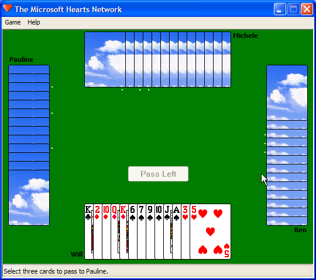
ZB = 42 is set. Cards are face down.
Every hand turns face up. Pauline, Michele and Ben have nothing left to hide. I removed the value afterwards.
Prior art The "ZB=42" Hearts cheat circulated as folklore for years. What's new here is only the receipt: the code path, in 1992's 16-bit Hearts, and a live run on XP.
Heritage · Hearts
A card game built to sell a network
Windows for Workgroups was Microsoft's first Windows with networking built in, and it needed something to show it off. "The Microsoft Hearts Network" was that something: four people on four PCs at one table, over NetDDE, a networked version of the DDE messages Windows programs already used to talk to each other. It's an early MFC program too. The 3.11 MSHEARTS.EXE carries MFC 1.0's class names (CObject, CFrameWnd, AfxFrameWnd) and the C runtime's QuickWin error text static.
1992 WfW 3.1 ships Hearts. The computer players are Anna, Lynda and Terri.
1993 WfW 3.11 keeps it. The DDE share it needs is set up in SYSTEM.INI next to Chat's and ClipBook's.
1995 Windows 95 includes it.
2001 XP's mshearts.exe still says "Welcome to the Microsoft Hearts Network". The players are now Pauline, Michele and Ben, and an Options box can rename them.
A share maps a network name to a DDE application and topic: HEARTS$ leads to the application mshearts, topic hearts. A player who joins a game connects to \\DEALER\NDDE$, and the dealer's copy of Hearts answers as an ordinary DDEML server. The item names it passes are in the binary as plain strings: Join, Pass, Move, Status, GameNumber and PassUpdatestatic. WIN.INI remembers the last dealer under server=. When you deal, it writes gamemeister=1.
reconstruction One hand of the network game, written as DDEML calls. The share, topic and item names are real; the order of the calls and the data formats are my guesses, not traced from the code.
ZB=42 in 1993
The XP run above has a 16-bit ancestor. With [Hearts] ZB=42 in WfW 3.11's WIN.INI, the same four-key chord turns every hand face up verified live, WfW 3.11:
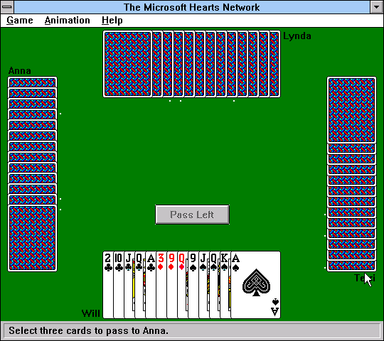
Face down.
Renaming the computer players in 1993
The 3.11 binary reads three WIN.INI keys with no menu or dialog behind them: p1name, p2name and p3name. I set them to the names of three people from this article's history, and the 1993 table took them verified live. Eight years later, XP put the same setting in the Options dialog as "Computer player names".
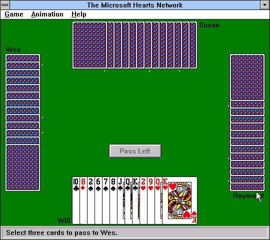
p1name=Wes, p2name=Susan, p3name=Raymond.
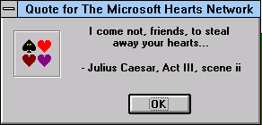
Help ▸ Quote… in 3.11, and still in XP. It's Mark Antony's funeral speech, which goes on "I am no orator, as Brutus is". A card game about stealing hearts, quoting a man who steals a crowd.
Prior art PC-Welt described p1name–p3name, and The Cutting Room Floor lists ZB=42. New here: the cheat run live on 3.11, and the share, items and gamemeister key read from the 3.11 files.
Solitaire draws everything itself too, so the crawler found nothing to grow. The only odd thing in the XP games' windows is in their Help: Search for Help on… in Solitaire, FreeCell and Minesweeper opens a dialog whose "Type in the keyword to find" label and Display button are covered by other controls verified live. Its files are more fun. The 3.11 SOL.EXE carries its card backs as bitmaps inside the program, plus, oddly, a complete second copy of the deck (all 74 card bitmaps, byte-identical to the ones in CARDS.DLL, which it never even loads; details below) static:
Twenty of the 74 card faces stored in WfW 3.11's SOL.EXE: the ones whose IDs appear as constants in its code. My first scan stopped there; the rest are reached by arithmetic, and the whole deck is inside (see below).
Heritage · Solitaire
The deck that outlived its own code
Solitaire began as a summer intern's side project. Wes Cherry wrote it in 1988 for Windows 2.x, and it shipped with Windows 3.0 in May 1990 to teach a generation of office workers to drag and drop. He was never paid royalties for it. His version had a boss key that put up a fake screen of work, and Microsoft made him take it out; Bill Gates's main complaint was that the game was too hard to win. The cards were drawn by Susan Kare, who had drawn the original Macintosh icons. Her deck, including twelve card backs, went unchanged for eleven years.
1988 Cherry, an intern, writes Solitaire on Windows 2.x. It's in the 3.11 About box as "Developed for Microsoft by Wes Cherry".
1990 Windows 3.0 ships it. Four of Kare's backs are animated: the robot's lights, the castle's bats, the beach's sun, and an ace sliding out of a sleeve.
1992 Windows for Workgroups adds CARDS.DLL, "Card Display Technology", for Hearts and the Entertainment Packs. Solitaire doesn't use it.
2001 XP's sol.exe finally imports cards.dll. All twelve backs are redrawn, the faces are kept, and the animation function becomes a stub.
2006 Vista replaces the game with a rewrite by Oberon Games with new art of its own.
Twelve backs, 1992 and 2001
These are the real bitmaps, pulled from WfW 3.11's CARDS.DLL and XP's cards.dll by resource ID. Of the 74 bitmaps the two files share, 62 are pixel-for-pixel identical: all 52 faces, the blank, the X and O markers, and every animation frame. Only the twelve backs (IDs 54–65) were redrawn.
WfW 3.11XP
The animations were on a timer, and the help desk had the timings wrong
Microsoft's knowledge base article Q66960 describes the effects: the robot and the bats move all the time, the ace peeks out "every 15 seconds", and the sun sticks its tongue out "every 30 seconds". Both CARDS.DLL and SOL.EXE carry the same table of frames. Each entry gives the back, the frame size, the number of frames, and a position for each frame static:
Solitaire calls the animation routine from a 250 ms timer, which it registers with ID 0x29A, or 666. It runs only while the clock is running, so that's why the KB says timed games only. The code that picks a frame for each back is in segment 4 at 0B46. The robot uses tick mod 4 and the castle tick mod 2. The ace uses (tick+4) mod 60 and the sun (tick+4) mod 200, and each plays its four frames when the remainder is below 4 static:
A tick of 250 ms would put the ace at 15 seconds, as the KB says, but the sun at 50, not 30. Windows 3.1 rounds timers up to its 55 ms clock, so a tick is really 275 ms. I timed both on the running system verified live: the ace came out at 0.1 s, 16.8 s and 33.9 s, and the sun at 6.7 s, 63.0 s and 118.8 s. That's one wink every 56 seconds, almost twice the period Microsoft's support article gave.
tick 0
reconstruction Drawn on a canvas from the real 1992 bitmaps (the backs, plus frames 678–684 from cards-anim-frames) and the real table above, with a 275 ms tick and Solitaire's frame rules.
verified live Captured from WfW 3.11's Solitaire as it ran: the robot's lights and dial, and the ace coming out of the sleeve.
Not twenty faces: the whole deck, twice
Earlier I wrote that the 3.11 SOL.EXE oddly carries twenty card faces of its own. That was my scanner's mistake. It counted only bitmaps whose IDs appear as constants in the code. SOL.EXE actually holds all 74 card bitmaps, and each one is byte-for-byte identical to the bitmap with the same ID in CARDS.DLLstatic. The twenty "orphans" were just the cards whose IDs don't happen to appear in the code. The others are reached by arithmetic. At seg10:0899 the code computes the resource ID as (card>>2) mod 13 + (card&3)×13 + 1.
SOL.EXE doesn't import CARDS.DLL at all. Its module table lists only KERNEL, USER, GDI and SHELL. Hearts does use the DLL, but it loads it at run time ("Cannot find cards.dll."). Solitaire's own copy of the card engine sits in its segment 10. It's the same engine: both copies make exactly 16 SetPixel and 12 GetPixel calls to round the card corners. Solitaire predates the DLL, and in 1992 it still carried its own copy of the deck.
XP cards.dll 5.1.2600.0, cdtAnimate (file offset 0x58A)
XP finally moved Solitaire onto the DLL, now called "Entertainment Pack Cardplaying Helper DLL" in its version resource. It kept all seven animation frames, 678 to 684, but the exported cdtAnimate is six bytes that return TRUE and draw nothing static. That was necessary: the backs with IDs 56, 63, 64 and 65 are now a fish, an astronaut, orange stripes and race cars, and the robot's dial would have blinked on the fish. So the frames still ship in XP, and nothing in XP can show them.
No earlier mention found I couldn't find the KB timings checked against the code or a running copy, or the observation that 3.11 Solitaire's 74 bitmaps duplicate CARDS.DLL byte for byte. Known already: the animations (KB Q66960), that 3.x Solitaire drew its own cards (wiert.me), that the frames survive in XP (The Cutting Room Floor), and that XP's backs don't animate (wine-devel). See also the debug menu XP still remembers.
FreeCell's numbered deals, and a deck that kept moving house
1978 Paul Alfille writes FreeCell on PLATO at the University of Illinois.
1991 Jim Horne, who had played it on PLATO, writes the Windows version for Entertainment Pack Vol. 2.
1993 Horne's FreeCell ships with Win32s as a test program for 32-bit Windows on 3.1, so a card game helped test the move to 32 bits.
1995 Windows 95 includes it. Dave Ring's Internet FreeCell Project solves all 32,000 deals by April 1995, and only #11982 has no solution.
1998 Spider Solitaire appears in Plus! 98, then in Windows Me and XP.
2001 XP raises FreeCell's range to a million deals.
Every deal from a number
A FreeCell game number is a seed for the C runtime's rand(). XP's freecell.exe calls srand(n), then for each of 52 cards takes rand() % cardsLeft, swaps that card to the end of the deck, and deals it to column i & 7static. The algorithm has been public for decades, so any number can be dealt anywhere. This one deals with the real 1992 card faces from CARDS.DLL:
reconstruction Positive numbers use Microsoft's rand() (seed = seed × 214013 + 2531011), like XP. The −1 and −2 layouts are decoded from XP's code at 0x01003233.
The two deals below zero
The Select Game dialog says "from 1 to 1000000", but the code that reads it accepts anything from −2 to 0xF4240static:
Neither −1 nor −2 goes through rand(). Two hand-written loops lay them out. In −1, columns 1–4 hold a whole suit each in the order A, 3, 5, 7, 9, J, K, with the aces at the bottom of the pile, and columns 5–8 hold the even cards from Q down to 2. In −2, the aces sit under rows of kings, queens and jacks. Both are known to be unwinnable. Reading the loops shows they were put together by hand, like a test fixture.
Also in freecell.exe (XP)
"User-Friendly User Interface" ; caption of the Ctrl+Shift+F10 box
"Choose Abort to Win, Retry to Lose, or Ignore to Cancel."
"entpack.ini" ; the Entertainment Pack's INI file
The well-known Ctrl+Shift+F10 cheat is a developer's joke: a message box that turns Abort/Retry/Ignore into Win/Lose/Cancel, with a sarcastic title. entpack.ini is the shared settings file of the 1991 Entertainment Pack. XP's FreeCell still knows its name, ten years later.
Spider brings its own deck
XP's spider.exe doesn't use cards.dll either. It has 53 bitmaps of its own, CARD1 to CARD52 and CARDBACK. I compared them with 1992's CARDS.DLL: all 52 faces are pixel-identical to Susan Kare's originals, and 49 are identical byte for byte static. The other three were re-saved in a different bitmap header format. So in 2001 Kare's deck existed three times in one XP install: in cards.dll, in Spider, and in the copy that Solitaire's 1990 code had left behind. Only the spider on the back is new.
No earlier mention found for Spider's private, pixel-identical copy of the 1992 faces, or for the −1/−2 layouts read from the code (the deals themselves are known from The Cutting Room Floor and TV Tropes). The deal algorithm, #11982 and the Ctrl+Shift+F10 box are all well documented.
"Not Yet Implemented." That string is in the 1992 SOL.EXEstatic. Where it's used wasn't traced.
Pinball. 3D Pinball Space Cadet's dialogs had nothing hidden in them. It's here because it had to be.
XP Solitaire: a single custom-drawn window.XP Pinball. Nothing found, but it had to be here.
Wes Cherry's debug menu, as XP still remembers it
XP's sol.exe (credited in string 108, "Developed for Microsoft by Wes Cherry") keeps the help-line text for a menu that the retail game doesn't have static:
ID
Status-bar text
Handled in XP?
1005
Set game number
no
1006
Print # of cards in each col
no
1007
Assertion failure
no
1008
Heck, I don't know
no
1009
Configure Solitaire for screen shots
no
1010
Force a win
yes: Alt+Shift+2, table HIDDENACCEL
The retail command switch handles 1000–1004 (Deal, Undo, Deck, Options, Exit), 1010 and About, and nothing else. The famous instant win is the one debug command whose handler and hidden accelerator survived. The template for the assertion box is still in the file too, so I had XP draw it rendered live:
DIALOG 999 in XP SP3's sol.exe. "winbug" was an internal bug-report alias; "Exit Windows" dates from when a crashing game could take Windows 3.0 down with it.
Prior artThe Cutting Room Floor covers these strings and sol.dbg, and eeggs.com lists the IDs. What's new here is only the check that XP's retail switch handles 1010 and nothing else, and a picture of the dialog drawn from the XP binary.
Clock
CLOCK.EXE "Microsoft Windows Clock" (3.11)
The 3.1 Clock is the purest example of the common-dialog contract. It lets you pick a font for the digital display, but only a font: no sizes, styles, effects or colours. Since the Font dialog's code insists every control exists, Clock's template keeps all of them and sweeps them into a pile off the right-hand edge. Some are 2 units wide, one is 4 by 4 static. Drag the corner out to find the heap:
Clock 3.11 · Font dialog, resource 100
An INI switch for the shadow. Clock reads NoShadow from clock.inistatic. The analog face draws its hands with a drop shadow; presumably this turns it off.
Its own resource type. Clock stores a custom resource of type DATA named CLOCKstatic, not traced further.
A polite error. "Not enough timing resources for Clock. Close other applications and try again." Windows 3.1 had a limited number of system timers, and Clock needed one.
Heritage · Clock
The clock that became a corner of the taskbar
1985 Windows 1.0 includes Clock among its first desk accessories, alongside Calculator, Notepad and Cardfile.
1992 The 3.1 Clock has analog and digital faces, a font choice for the digital one, Seconds, Date, Always on Top in the system menu, and No Title, which removes the caption and menu so it can sit on the desktop like a gadget.
1995 Windows 95 drops it. KB 159852 points users to the taskbar's "Show Clock" box instead. The clock had become part of the shell.
1996 Windows NT 4.0 still ships clock.exe, and KB Q157895 documents the trouble its No Title mode causes with the new taskbar.
2006 The idea comes back as a gadget: Vista's sidebar clock.
Here it is on WfW 3.11, captured live verified live. In analog mode Clock has no room for the date, so it puts the date in the window title instead.
Digital.Settings.Analog: date in the title.No Title.
No Title takes the menu bar away with the caption, so the menu that turned it on is gone too. The way back is to double-click the face, which is the workaround KB Q157895 gives. Turning a window's caption on and off at run time was unusual enough that Microsoft published a separate Win16 SDK sample for it (KB Q83915). After you close Clock, CLOCK.INI holds its state as six numbers: mine read Options=1,0,0,1,0,1verified live.
Clock
Settings
Tick No Title, then double-click the face to get the title back.
reconstruction Drawn after the screenshots above: 60 dots, 12 bevelled hour squares, and hands as thin outlined diamonds. It uses your browser's time.
Prior art Clock's features and its removal in Windows 95 are documented by Microsoft (KB 159852, Q157895). The date-in-title behaviour and the CLOCK.INI contents are shown here from a live run.
Write was Windows' word processor until WordPad replaced it in Windows 95, and it never fully left.
An icon that's a label. The 3.11 About Write dialog contains a static control 0×0 in size whose text is mw_iconstatic: it's an icon control naming the resource to draw, and the icon sizes it. Every one of Write's internal resource names starts with MW or MSWRITE (MW_MENU, MW_ACCTB, MSWRITE_RULER, MSWRITE_PAGEINFO), presumably for "Microsoft Write".
Windows 7 still has a write.exe. It's 9,216 bytes, its version resource calls it "Windows Write", and the only text of its own is wordpad.exestatic. Type write in Windows 7's Run box and this stub starts WordPad: Write's name, kept alive as a forwarding address.
WordPad's "Zoom" in the far corner. Like Paint, Windows 7 WordPad's ribbon window holds a hidden static Zoo&m, here at (32732, 32710) and 65535 × 65535 pixels, the largest control the crawler met verified live.
Doors for other programs. WordPad registers window messages named WordPadOpenMessage and WordPadPrinterChangedstatic, a way for another instance or the shell to talk to it.
Heritage · Write
Write's file format, byte by byte
1985 Windows 1.0 ships Write, a WYSIWYG word processor with fonts, bold and italic. It was free in the box, while Word for Windows didn't arrive until 1989.
1990 Windows 3.0's Write saves .WRI files that begin with 31 BE. Their 128-byte header closely follows Word for DOS's.
1992 Write 3.1 can embed OLE objects. A file with pictures in it begins 32 BE instead.
1995 Windows 95 replaces Write with WordPad, built on the RichEdit control. WordPad's source code was published as a sample with MFC 3.2, so a Windows accessory doubled as a programming tutorial. write.exe stays as a tiny program that starts WordPad.
2001 XP's write.exe is 5,632 bytes. Its version resource says "Windows Write", and all it does is ShellExecute("wordpad.exe")static. Windows 7's is 9,216 bytes and does the same.
2023 Microsoft deprecates WordPad. Windows 11 24H2 removes it, and with it, finally, the last way to open a .WRI file in Windows.
One sentence typed into Write on WfW 3.11 and saved as HERI.WRI. The ¤ is Write's end-of-document mark.
The file it saved is 640 bytes: five 128-byte pages. Write never wrote anything smaller than a page verified live. Click a coloured region to see what it is:
Real bytes of HERI.WRI, saved by WfW 3.11's Write.
One detail I didn't expect: the two formatting pages hold only a few meaningful bytes each, but they aren't zero-filled. Bytes 0x10 to 0x7E of the paragraph page are an exact copy of the same range in the character page, 111 bytes including the character properties, which mean nothing there. Write evidently built the second page in the first one's buffer without clearing it, and the first page's unused space holds whatever was in memory before that. So a 1993 .WRI file carries a small sample of Write's memory. It's harmless here, but it's the same kind of leftover-memory leak that was later found in Word's own files.
Prior art The format is documented (Windows 3.1 SDK; PRONOM x-fmt/4), and so are WordPad's MFC origin and its removal. New here is only the annotated dump of a file saved on a running 3.11, and the leftover bytes in its formatting pages.
The window puppetry films on this site drive other programs' windows from outside. Windows 3.0 shipped a program that did the same thing. Recorder captured every keystroke and mouse event in the system, saved them as a .REC macro, and played them back into whatever program you named. It lasted from 1990 to 1995.
1990 Windows 3.0 ships Recorder. Its About box says "Developed for Microsoft by Softbridge Ltd." static. Softbridge also sold the Automated Test Facility and the Bridge Toolkit, which Microsoft's knowledge base recommends for editing Recorder macros.
1992 Microsoft Test, Microsoft's own GUI-testing tool, records and replays the same kind of input.
1995 Windows 95 leaves Recorder out (KB 159852). The journal hooks it relied on stay in the Windows API.
2009 Windows 7 brings back a recorder in name only: the Problem Steps Recorder, which takes screenshots of your clicks for a bug report and doesn't play anything back.
2021 Power Automate Desktop puts a free macro recorder back in Windows 11, 26 years after Recorder left.
How it worked: three hooks
RECORDER.DLL ("Recorder Library") exports JRHOOK, JPHOOK and KHOOKstatic. They're a journal-record hook, which copies every input event in the system, a journal-playback hook, which feeds events back in as if from the hardware, and a keyboard hook for the shortcut keys. The library also checks where a played-back mouse event will land, using WindowFromPoint, GetClassName and lstrcmp. That's why the error strings read like a puppeteer's worries static:
RECORDER.EXE (3.11), string table
2008 Cannot play back mouse movements to the window you want.
2009 Playback window no longer exists.
2018 Cannot play back to a covered window.
2020 Cannot play back to a missing window.
1050 Mouse messages recorded on a %d by %d display may not work.
1012 Same Application 1013 Any Application
1019 Window 1020 Screen ; "Relative to:"
1035 %4.4d %s (%u,%u) %s, %ld msec
1036 %4.4d %s, %s, %s, %ld msec
1061 Developed for Microsoft by Softbridge Ltd.
Strings 1035 and 1036 are the format of a hidden window. Hold Shift while choosing Macro ▸ Properties and Recorder shows Macro Events instead of the Properties dialog. It's a list of every recorded event and the window it went to. The code checks GetKeyState(VK_SHIFT) just before it picks dialog 117 over 109 static. Microsoft did document this, in KB Q62647. Here it is on 3.11, after I recorded myself typing "hello" into Program Manager verified live:
Every event names its target as MODULE!Class, here PROGMAN!Progman. That's how Recorder found the window again on playback: by the program and window class, not by a handle that would change. The delays are multiples of 55 ms, the PC timer tick.
Record Macro: "Relative to: Window" stores mouse positions relative to the target window, so a macro survives the window being moved.Ctrl+Break ends a recording. Recorder sits outside every program, so it needs a key no program will use.
Record yourself
Recorder - (Untitled)
Nothing recorded.
reconstruction Captures your key-down and key-up events in this page, rounds the delays to 55 ms ticks, and lists them in Recorder's own format (string 1036). Playback types them back with the recorded timing. It's a browser imitation of a journal hook, not one.
Terminal, the other contractor
Recorder wasn't the only accessory Microsoft bought in. Terminal's About text says "Developed for Microsoft by Future Soft Engineering, Inc.", the makers of the DynaComm terminal program. The name hidden in its NE header is Windows Terminal Version 3.00static. Twenty-nine years later Microsoft used "Windows Terminal" again, for a different program.
Prior art Shift+Properties is in Microsoft's own KB Q62647, and Softbridge's role is mentioned in KB Q72855. The hook exports, the window-matching code path and the MODULE!Class addressing are read from the 3.11 files here. I haven't seen them connected before to how puppetry finds its windows.
Control Panel applets are mostly property sheets and dialogs, so this is where the hidden-control finds cluster. Four of them, from three Windows versions.
International: four invisible 1×1 buttons (3.11)
The 3.11 International control panel has four group boxes: Date, Currency, Time and Number Format. Each has a Change… button with no shortcut of its own. Hidden at (300, 200) are four buttons, each one pixel square, captioned "D", "U", "T" and "N". These are real captures from WfW 3.11. Press Alt+D, U, T or N, or tap a key below:
Four group titles, four underlined letters, no visible button to receive them.
Here's the "D" button in MAIN.CPL, followed directly by the group box it serves static:
styled as a 1990s hex editor Real bytes from WfW 3.11's SYSTEM\MAIN.CPL, file offset 0x2006A. A one-by-one button at (300, 200), and right after it (dim) the group box whose caption begins "&Date".
The group box already has D underlined in its own caption, "&Date Format", but a group box can't take focus or be pressed. So the template slips a one-pixel button, also &D, in just ahead of it, and that's what the keyboard ends up pressing.
No earlier mention found I searched and found nothing about these 1×1 buttons. If you knew, tell me.
Date and Time: labels only a screen reader can see (XP)
XP's Date and Time panel contains seven 0×0 hidden labels: Month, Year, Day, Hour, Minute, Second, AM/PM verified live. They give each spin box and field a name for accessibility tools without drawing anything. The Windows 7 version swapped them for something more ordinary: a hidden Help button under the bottom edge of each tab.
XP · Date and Time, timedate.cpl resource 1
XP. The clock face is one control; its spin boxes are named by invisible labels.Windows 7. Clean face, hidden Help button underneath.
Power Options: a credit and a test hook (XP, 7)
XP's UPS tab has an invisible line, "Technology developed by American Power Conversion", split across two hidden statics static, presumably shown when an APC unit is attached. And Windows 7's powercfg.cpl registers a window message called PowerCplTest. When it arrives with wParam = 1, the panel finds an item in its Advanced settings tree and expands it into view static: a way for a test program to drive the panel to a setting from outside.
XP · UPS tab, powercfg.cpl resource 111
386 Enhanced: the folding Virtual Memory dialog (3.11)
Some dialogs store an extra panel off-canvas and grow over it when you ask. WfW 3.11's 386 Enhanced ▸ Virtual Memory is 104 units tall; press Change>> and it unfolds "New Swapfile Settings", plus the once-exotic Use 32-Bit Disk Access and Use 32-Bit File Access checkboxes, all waiting below static. This one is a feature working as designed, but it's the same trick as everything else here.
3.11 · Virtual Memory, CPWIN386.CPL resource 500
Most Windows 7 property sheets (Mouse, Sound, Internet Options, Region, Date and Time) carry a hidden Help button tucked under the bottom edge, waiting for a flag nobody sets verified live. XP's property sheets have the same one.
System: a longer Error Reporting dialog that XP never shows (XP)
System Properties ▸ Advanced ▸ Error Reporting is XP's switch for the "Send Error Report" dialog. sysdm.cpl contains two templates for it. The one XP shows has Disable, Enable, Windows operating system and Programs. The other, DIALOG 4101, is never referenced by any code static and is 42 pixels taller, because it has two options the shipping one doesn't: Unplanned machine shutdowns and Force queue mode for program errors.
live What XP opens.rendered live DIALOG 4101, drawn by XP from the same file.
Both extras belong to servers. "Unplanned machine shutdowns" pairs with the Shutdown Event Tracker that asks Windows Server 2003 admins why the machine went down, and "queue mode" is the Error Reporting policy that saves reports to send later instead of prompting. My guess is that this is the server variant of the dialog, compiled into the client because XP and Server 2003 were built from one source tree, and dropped on the floor by XP's code.
Prior art
I found no mention of this second template, or of these two checkboxes in an XP binary. Seen it before? Tell me.
Turn Off Computer
msgina.dll resource 20100 (XP)
XP's Turn off computer box famously hides Hibernate: hold Shift and Stand By turns into Hibernate. Ed Bott (2005) and Raymond Chen (2006) pointed out that just pressing H works too. The reason is in msgina.dll: a real Hibernate pushbutton is always in the dialog, parked at (30093, 30049) dialog units.
But that's where it was meant to go. In pixels, 30093 dialog units is 45,140, more than a signed 16-bit coordinate can hold (32,767), so it wraps around. Probing the live dialog shows where the button really is:
ok id=20104 Button:ownerdraw @54,80 33x33 visible,tabstop "&Stand By"
ok id=20103 Button:ownerdraw @140,80 33x33 visible,tabstop "T&urn Off"
ok id=20105 Button:ownerdraw @225,80 33x33 visible,tabstop "&Restart"
OUTSIDE id=20106 Button:pushbutton @-20396,-16706 33x33 visible "&Hibernate"
Up and to the left. Behind you. Holding Shift doesn't move it, either; I probed the dialog while Shift was held, and XP just repaints the Stand By button with a different icon and label. The real Hibernate button is a plain, unthemed pushbutton that exists so the H key has something to press. Nobody was ever meant to see it, so go and find it. This box is drawn at true scale, one pixel per pixel.
↖
Press Play. Then scroll; Shift + mouse wheel scrolls sideways.
You found it. After 26,524 pixels: a plain grey 33×33 button, its caption clipped to "berna". This is what the Hibernate button really looks like. Here's what happened when I brought it home and clicked it:
Start ▸ Turn off computer. The hidden button is pulled in from (−20396, −16706) and lands under Turn Off at its true size ("berna"), is widened to read "Hibernate", and is clicked. XP really hibernates.
With Shift held, XP repaints Stand By as Hibernate. The real button doesn't move.The actual Hibernate button, brought home and widened.
How far is that, really?
Measure from the centre of Turn Off. Stand By and Restart are 86 and 85 pixels away, Cancel is 141, and Hibernate is 26,524. Make Turn Off the Sun, put Stand By and Restart where Earth orbits (1 AU), and keep every ratio exact:
Drawn to a logarithmic scale; the gap after the Sun hides the stretch between 0 and 0.5 AU. Every distance is exact relative to the dialog: 1 AU = 85.5 px, the distance from Turn Off to Stand By.
Hibernate is 310 AU out. Neptune is at 30, Pluto at 40, and Eris, the dwarf planet that got Pluto demoted, is about 96 AU away right now. Voyager 1, the most distant thing humans have ever made, is about 170. Hibernate is nearly twice as far: about where astronomers predict the closest approach of Planet Nine, a world nobody has seen, proposed to explain the pull on other distant objects. Which is a fair description of a button you can only feel through the H key.
Prior art
The Shift trick was circulating as a tip by June 2003 (evolt.org mailing list), and Ed Bott wrote it up in May 2005. The button's coordinates were first published by Vishal Gupta, a Microsoft MVP, on the Digit forum in August 2006: setting them to 5, 5 makes it appear. I found no one describing the 16-bit wraparound, or that the real button says "berna". Know more? Tell me.
Raymond Chen also explains why hidden controls keep working shortcuts: it's on purpose, for keyboard accessibility. Hiding a control removes it from view, not from the keyboard. To really kill one you also have to disable it, which is what XP Paint does to Transparency whenever the open file isn't a GIF.
Task Scheduler
xpsp2res.dll (XP) · mstask.dll resource 402 (7)
The most extreme folding dialog belongs to Task Scheduler's Schedule page. The dialog is 253 units wide, and four complete panels sit in a row beyond its right edge, one per kind of schedule static:
Here is how that works at runtime: the visible area is a window onto a strip of panels, and changing the schedule type slides a different panel into view. Pick one:
Schedule Task Daily
Every day(s)
Schedule Task Weekly
Every week(s) on:
Schedule Task Monthly
Schedule Task Once
Run on:
Schedule Task When Idle
When the computer has been idle for: minute(s)
A reconstruction from the template's coordinates; the minimap shows the five panel positions, x = 0, 257, 507, 757 and 1007.
Dr. Watson was the crash reporter that wrote drwtsn32.log and a crash dump whenever a program died. Most people met it as a dialog apologising for something else. Inside it, Microsoft shipped what looks like a developer's scratch pad: a dialog called "Crash Dump File Selection" (resource 513) containing a label that says "This is to the left", a label that says "This is to the right.", placed to the right, past the edge, and a 250-unit-wide button labelled Test hanging off the bottom static. Its real file dialogs (resources 504 and 511) also hide a disabled Read Only checkbox off the edge.
XP · Dr. Watson, resource 513
No earlier mention found I found nothing about Dr. Watson's "This is to the right." dialog. Seen it? Tell me.
Help's Find tab
ftsrch.dll, the full-text search engine behind WinHelp's Find tab (XP)
The Find tab of every old .hlp file ("1 Type the word(s) you want to find…") is drawn by ftsrch.dll. Its template has a static at (14563, 16383), about 21,800 by 26,600 pixels away, whose text reads "No Data: This static is used to automate testing"static. Presumably a test harness read it with WM_GETTEXT, the same message my tools use. The same template parks "%d Matching Words" at (−8191, −8191), off the opposite corner.
Windows 3.1's most famous easter egg is a scrolling list of the people who made it, summoned by a ritual of Ctrl+Shift clicks in Program Manager's About box. The names aren't in Program Manager. They're in SHELL.DLL, as an RCDATA resource numbered 9999 (2,064 bytes) that no dialog or menu refers to, next to two bitmaps (9997, 9998) that nothing references either. The bytes look like noise until you XOR each one with 99hstatic. Try it:
Disk Editor Object Edit Link View Info Tools Help
SHELL.DLL Offset 94B0h RCDATA 9999
styled as a 1990s hex editor The bytes are real, from WfW 3.11's SYSTEM\SHELL.DLL, 304 bytes from file offset 0x94B0, where the scrambled roll starts. The decoding is a plain XOR with 99h; the scrambled "separators" become small numbers that mark sections and line breaks.
Decoded, the roll opens "Dedicated to all the hard-working people of the Microsoft Windows 3.10 Team!", then "Lead by/BRADSI", Development, Program Management, Testing, Multimedia, OLE, WinHelp, Fonts, Beta, Marketing, Documentation and Graphic Artists, and ends "Special Thanks/to billg/mikehal/steveb/t-bear". The easter egg itself is well known; I hadn't seen anyone describe how the list is stored.
Exit Explorer, from the code
Windows 7 has a known trick: hold Ctrl+Shift and right-click an empty part of the Start menu and the menu gains Exit Explorer (the taskbar version arrived with Windows 8). Here's the code that makes it so static. Explorer loads menu 211 with its two items, Properties and Exit Explorer, and then deletes Exit Explorer unless both keys are down, or if the DisableTaskMgr policy is set:
styled as SoftICE Real disassembly of Windows 7 SP1's explorer.exe at 0108AB84, made with Capstone; imports are named from the file's import table and strings from its data. The selector 001B is SoftICE convention. Not shown: just before this, Explorer also checks a value called TaskbarContextMenu under Explorer\Advanced, which I didn't trace.drawn from the resource Menu 211 from explorer.exe.
A factory switch. Windows 7's Explorer compares its command line with /FACTORY and /globalhotkeystatic. What they do wasn't traced.
Messages with names. Explorer registers window messages called SHELLHOOK, Logoff User, HardError, SysFrostedWindow and ShowOnlyQuickLaunchDeskBand; Program Manager 3.1 registers OTHERWINDOWCREATED and ACTIVATESHELLWINDOWstatic.
Program Manager's lockdown keys. 3.1's PROGMAN.EXE reads NoRun, NoClose, NoFileMenu, NoSaveSettings and MinOnRun from PROGMAN.INI: the ancestors of Group Policy static.
The menu behind the Start menu (XP), and a correction
Right-click an empty part of XP's Start menu, the blue banner with your name or the white space under your programs, and you get a menu with exactly one item: Propertiesverified live. It's the same menu 211 as the Windows 7 code above. In XP it holds only &Properties (command 32754); Windows 7 added Exit Explorer (32756) and the Ctrl+Shift check.
Before showing it, XP's Explorer reads a registry value I haven't seen written down anywhere: TaskbarContextMenu under HKCU\Software\Microsoft\Windows\CurrentVersion\Explorer\Advancedstatic. The code at 0x0103E8B4 pushes the value name, Advanced and HKEY_CURRENT_USER, calls a settings helper, and returns early if the helper says so. Otherwise it loads menu 211 and calls TrackPopupMenuEx. I set the value both ways:
Value absent or 1: right-click the banner and Properties appears.TaskbarContextMenu = 0: the same right-click does nothing.
The taskbar's own right-click menu (Toolbars, Cascade, Task Manager, Lock the Taskbar…) is unaffected, so despite its name the value switches off the Start menu's menu verified live; I deleted it afterwards. Its exact semantics come from a shared helper that also consults policy keys, so treat "0 hides it" as what I observed, not the whole contract.
Correction. Because menu 211 is the Start menu's menu, Windows 7's Exit Explorer lives there too. The documented tip, which goes back to Vista, is to hold Ctrl+Shift and right-click an empty area of the Start menu (or its power button), as winhelponline and JTB World (2007, Vista) describe. The taskbar version is Windows 8 and later. The code walk above is right; the place you click isn't the taskbar.
Prior art
Exit Explorer is well known. I found no description of the TaskbarContextMenu value: searches turn up only the documented NoTrayContextMenu policy, which hides the taskbar's menu instead. Seen it before? Tell me.
Registry Editor
REGEDIT.EXE "Registration Info Editor" (3.11) · regedit.exe (XP, 7)
In Windows 3.1 the registry was a small database of file associations and OLE servers, and Registration Editor showed it as a list of file types. Start it as regedit /v and you get the real tree, with a different menu bar: Save Changes, Restore To Last Save, Save Registration File, a whole Search menu and Add/Copy/Delete Key. The code picks menu 4099 instead of 4098 only when the /v flag bit is set static. /v was documented in the SDK; the accelerator table's name, SDKREGED, suggests that's where the tool came from.
drawn from the resource MENU 4099 from REGEDIT.EXE, the /v menu bar.
Three list boxes at (−100, −100). Its custom file dialogs park unneeded file-list boxes up and to the left of the window, the common-dialog contract again static. Control Panel, Add Fonts and the shell's "Locate" dialog do the same.
A label at (−1, −1). Two of XP Regedit's dialogs (resources 100 and 108) have a 0×0 static reading "Selected branch" just off the corner static; Windows 7's Print dialog for Regedit still has it verified live.
It can register itself. Windows 7's regedit.exe understands regserver and unregserverstatic.
Odds and ends
A few finds that don't belong to any one famous program.
card.name.goes.here (WfW 3.11 network setup)
Windows for Workgroups' network setup, WFWSETUP.DLL, keeps the name of its help file in invisible 0×0 labels (setup.hlp, control.hlp): data stored in the UI, read back at runtime. Two of its dialogs are captioned card.name.goes.here, to be replaced with the name of your network card static.
3.11 · WFWSETUP.DLL resources 3207, 3601
Focus sinks (Windows 7)
Two Windows 7 property pages (network device properties and Media Player sharing) hold a 1×1 edit box at (10000, 10000) that is still a tab stop: somewhere safe to put the keyboard focus on a page where everything else is read-only static.
Windows 7 · NcdProp.dll.mui 200, wmpnssci.dll.mui 1000
No earlier mention found I searched for card.name.goes.here, the APC credit and the focus sinks and found nothing. Maybe you spotted one with Spy++ in 1999. I'd love to hear it.
Debug menus and test switches
Internet Explorer's Debug menu. Windows 7's ieframe.dll.mui ships a 17-item Debug context submenu (Trace Tags, Dump tree, Dump splay tree, Memory monitor, Performance meters, …) in the same resource as the normal page menus static. Only debug builds of the HTML engine seem to use it.
dxdiag's stress mode.dxdiag.exe reads Stress Scan, Stress Skip Stage, Stress Page Change, Stress Save File and Stress Cancel Gather from its registry key, and the code acts on them static: an automated page-flipping torture test, by the look of it.
Magnifier's hidden words. Windows 7's Magnifier accepts wait, noutilman, hilight and globalhotkey on its command line besides the documented modes; hilight sets up magenta and cyan objects static.
Longhorn lives on. Windows 7's On-Screen Keyboard compares its skin name with L"Longhorn" in six places; the alternative is L"Classic"static.
Remote Desktop's hidden button. Windows 7's Remote Desktop window keeps a hidden Options >> button and two credential checkboxes at x = 0 verified live.
drawn from the resource The Debug submenu from ieframe.dll.mui MENU 24640.
What it tells us about how they worked
Classic Windows dialogs were drawn in a dialog editor and compiled into the program as a static template: a list of controls with coordinates in "dialog units", which scale with the system font. That one fact explains almost everything above:
Moving is cheaper than deleting. Code elsewhere looks controls up by ID. Delete one and something may crash; move it to (300, 200) and nothing does. Shrinking a dialog over a feature you've cut is the lowest-risk edit there is.
The keyboard was a first-class citizen. Many of the hidden controls exist purely so a shortcut letter works. They're accessibility plumbing, not mistakes.
Templates are shared, so features outlive their programs. Notepad's whole-word checkbox exists because the Find template has it, not because Notepad ever used it.
Localisation reshapes everything. Translators resized every dialog for every language (the colour picker is 298 units wide in English, 331 in Greek), so "just off the edge" had to be generous: 300, 1000, 10000.
The trend ends with the ribbon. As UI moved into custom-drawn surfaces (DirectUI, the ribbon, games that paint themselves), there were fewer windows to misplace. Rare in 2001, rarer in 2009, and in modern apps there's often nothing for these tools to find at all.
Did you already know?
Several of these have no trace online that I could find. If you knew about any of them, wrote about one, worked on one of these dialogs, or have your own story about something hiding just off the edge of a window, please tell me. The best place is an issue on the project's GitHub; I'll add credit for earlier finds here.
# scan any Windows binary, from any OS
./dlgscan-linux-x64 /path/to/WINDOWS/system32/*.dll
# on a running Windows: find, then reveal, the hidden parts of an open dialog
winprobe probe "Attributes"
winprobe tab "Attributes"
winprobe reveal "Attributes"
Source, prebuilt binaries for Windows, Linux and macOS, every scan result and every crawl log are at github.com/williamsharkey/windows-secrets. One warning from experience: crawl opens menu items in ways real people never would, and on XP it crashed Paint, Regedit and Packager along the way. Use a virtual machine.
Next: every one of these controls is a real window that another program can move, resize, re-label and even re-parent into a different application. I made two short films that way, performed entirely by XP's own controls: Window Puppetry, a tribute to the ones who never got their chance, and BASILISK.